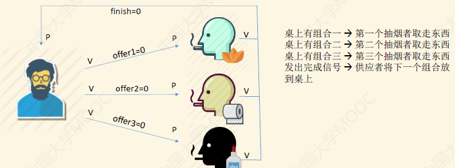
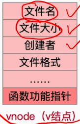
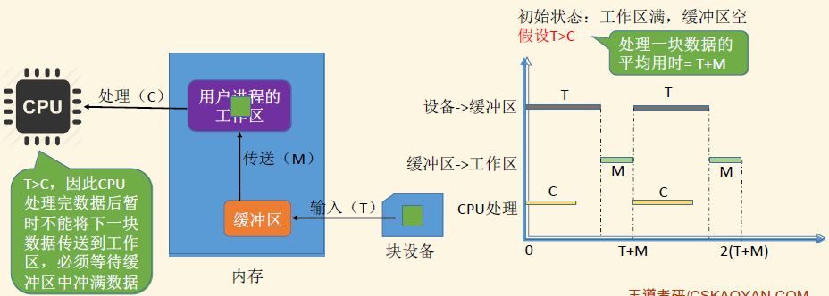
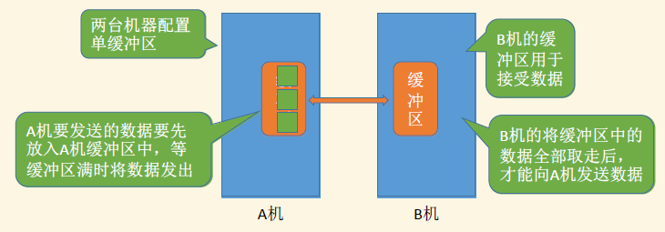

操作系统学习笔记
第一章 计算机系统概述1-1 操作系统的概念1-1.1 概念1-1.2 功能与目标1、本身：作为系统资源的管理者2、对上层：提供方便易用的接口3、对下层：实现对硬件资源的扩展1-1.3 操作系统的四个特征1、并发Concurrence2、共享Sharing3、虚拟Virtual4、异步Asynchronism1-1.4 用甘特图表示时序关系1-1.5 操作系统发展历史与分类1、手工操作阶段2、批处理阶段3、分时处理操作系统4、实时操作系统5、网络操作系统和分布式计算机系统1-2 操作系统的运行机制和环境1-2.1 OS运行机制1、两类程序2、两类指令3、两种状态与切换1-2.2 中断与异常1、中断的作用2、中断的类型3、中断机制的基本原理4、为什么说多道程序概念在中断和通道技术加持下才有用？1-2.3 系统调用1、定义2、系统调用的作用3、系统调用的过程1-3 操作系统的体系结构1-3.1 大内核和微内核1、宏内核和微内核2、分层结构3、模块化4、外核1-3.2 虚拟机1-3.3 OS的引导与启动第二章 进程与线程2-1 进程与线程2-1.1 进程的概念、组成和特征1、进程的概念2、进程与PCB的组成3、进程的特征2-1.2 进程的状态、转换与PCB组织方式1、进程的状态2、进程状态的转换3、PCB的组织2-1.3 原语和进程控制1、原语2、进程控制相关原语3、程序运行环境2-1.4 进程通信1、共享存储2、消息传递3、管道通信4、共享文件2-1.5 线程和多线程模型1、线程（Tread）概念2、线程的属性3、线程的实现方式——用户级线程4、线程的实现方式——内核级线程5、多线程模型6、线程的状态、转换和组织2-2 处理机调度2-2.1 概念1、调度及层次2、进程的七状态模型2-2.2 进程调度1、时机2、临界区和临界资源3、进程调度方式4、进程的切换与过程2-2.3 调度器和闲逛进程1、调度器2、闲逛进程2-2.4 调度算法1、总述2、调度算法评价指标3、先来先服务FCFS4、短作业/短进程优先和最短剩余时间优先SJF/SPF5、高响应比优先HRRN6、时间片轮转算法RR7、优先级调度算法8、多级队列调度算法9、多级反馈队列算法2-3 同步与互斥2-3.1 概念1、进程同步2、进程互斥2-3.2 进程互斥的实现方法1、软件方法——单标志法2、软件方法——双标志先检查法3、软件方法——双标志后检查法4、软件方法——Peterson算法5、硬件方法——中断屏蔽方法6、硬件方法——TSL指令7、硬件方法——Swap指令8、互斥锁2-3.3 信号量机制1、概念2、整形信号量3、记录型信号量4、进程互斥5、进程同步6、进程前驱关系2-3.4 算法和问题1、生产者——消费者问题2、多生产者——多消费者问题3、吸烟者问题4、读者——写者问题5、哲学家进餐问题6、总结2-3.5 管程1、概念2、管程的应用3、管程和PV操作的区别和联系2-4 死锁2-4.1 死锁的产生2-4.2 死锁的预防2-4.3 避免死锁——银行家算法1、银行家算法的概念2、安全算法——自然语言3、银行家算法——数学语言2.4-4 死锁的检测和解除1、检测2、解除第三章 内存管理3-1 内存管理基本概念3-1.1 内存和装入方法1、内存的概念2、绝对装入3、静态重定位装入4、动态运行时装入5、程序运行的过程3-1.2 内存管理的概念、覆盖和交换1、内存管理2、内存保护3、内存共享4、覆盖技术5、交换技术3-2 存储管理的几种类型3-2.1 连续分配1、单一连续分配2、固定分区分配3、动态分区分配4、动态分区分配算法3-2.2 基本分页存储管理1、分页2、页表3、逻辑地址结构4、基本地址变换机构5、具有快表的地址变换机构6、两级页表3-2.3 基本分段存储管理、段页式管理1、分段和段表2、分段和分页的对比3、段页式管理3-3 虚拟内存管理3-3.1 虚拟内存1、局部性和虚拟内存2、虚拟内存的特征和存储管理方式3-3.2 请求分页管理方式1、页表机制2、缺页中断机构与地址变换机构3-3.3 页面置换1、最佳置换算法OPT2、先进先出FIFO3、最近最久未使用LRU4、时钟置换算法CLOCK、NRU5、改进的CLOCK算法3-3.4 页面分配策略1、驻留集2、调入页面3、抖动/颠簸现象与工作集3-3.5 内存映射文件和地址翻译1、内存映射文件第四章 文件管理4-1 文件系统基础4-1.1 文件初步1、文件与属性2、文件的组织与存储4-1.2 OS应当提供的功能1、综述2、Create/Delete3、Open/Close4、Read/Write4-2 文件与空间的组织和管理4-2.1 文件的逻辑与物理结构——非空闲磁盘块1、逻辑结构与物理结构2、有结构文件的逻辑结构3、文件的物理结构（分配方式）4、混合索引之inode4-2.2 文件存储空间管理——空闲磁盘块1、存储空间的划分和初始化2、空闲表法3、空闲链表法4、位示图法5、成组链接法4-2.3 文件保护1、口令保护2、加密保护3、访问控制4-3 目录4-3.1 文件控制块和索引结点1、文件控制块2、索引结点4-3.2 目录及其结构1、目录2、目录结构4-3.3 文件共享1、基于索引结点的共享2、基于符号链的共享4-4 文件系统4-4.1 文件系统的结构和布局1、文件系统的层次结构2、文件系统的全局结构4-4.2 虚拟文件系统与文件系统挂载1、虚拟文件系统2、文件系统挂载第五章 IO管理5-1 IO设备及其管理5-1.1 IO设备与控制1、IO设备的概念与分类2、IO控制器5-1.2 IO设备的控制方式1、程序直接控制方式2、中断驱动方式3、DMA方式4、通道控制方式5-2 IO核心子系统5-2.1 IO软件和接口1、IO软件层次结构——整体2、IO软件层次结构——分层5-2.2 IO核心子系统总述5-2.3 假脱机技术1、简介2、输入和输出3、共享打印机原理分析5-2.4 设备的分配和回收1、分配设备的考虑因素2、设备分配管理时的数据结构3、设备分配的步骤4、设备分配步骤的改进5-2.5 缓冲区管理1、缓冲区2、单缓冲4、双缓冲和循环缓冲区5、使用单双缓冲在通信时的区别6、缓冲池5-3 外存设备5-3.1 磁盘与调度算法1、磁盘及其结构2、磁盘一次读写需要的时间3、磁盘调度算法5-3.2 磁盘的优化和管理1、减少延迟时间的方法2、磁盘的管理5-3.3 固态硬盘
第一章 计算机系统概述
1-1 操作系统的概念
1-1.1 概念
操作系统（Operating System，OS）的功能有：控制和管理整个计算机系统的硬件和软件资源，并合理地组织调度计算机的工作和资源的分配，以提供给用户和其他软件方便的接口和环境。OS是计算机系统中最基本的系统软件。
对本身来说：OS是系统资源的管理者；
对上层用户来说：向上层（用户）提供方便易用的服务；
对下层的硬件来说：是最接近硬件的一层软件。
1-1.2 功能与目标
这部分是从1.1中的三点对OS的理解来说的，分别是：对自身来说、对上层用户来说和对下层硬件资源来说。
1、本身：作为系统资源的管理者
理解OS提供的功能：用QQ聊天作为例子。
打开文件夹，找到QQ安装的位置——文件管理；
双击QQ.exe，QQ运行——将数据从磁盘取出放入内存是存储器管理，CPU执行进程时处理机管理；
开始视频聊天——OS管理并调用摄像头设备，是设备管理。
课本的第二、三、四、五章分别对应处理机、存储器、文件和设备管理；这说明，OS这门课要学的就是OS的功能及实现方式。
2、对上层：提供方便易用的接口
操作系统采用的是封装思想：将不易理解的二进制代码封装成一些便于交互的接口。
GUI：图形化用户接口（Graphical User Interface）。用户可以直接使用。
命令接口：即命令行交互方式，有联机命令接口（交互式命令接口，输入一个处理一个）和脱机命令接口（批处理命令接口，依次处理一批命令，操作系统依次执行bat文件）。用户可以直接使用。
程序接口：可以在程序中进行系统调用来使用程序接口。普通用户不能直接使用程序接口，只能通过程序代码间接使用。比如C语言的printf函数就是调用了操作系统提供的显式相关的“系统调用”。系统调用类似于函数调用，是应用程序请求操作系统的服务的唯一方式。某些教材认为，系统调用就是广义的指令。
3、对下层：实现对硬件资源的扩展
OS实现的是对硬件机器的拓展。没有任何软件支持的计算机成为裸机。在裸机上安装的操作系统，可以提供资源管理功能和方便用户的服务功能，将裸机改造成功能更强、使用更方便的机器，即扩充机器（或虚拟机）。
一般来说，IO管理软件是第一次抽象（扩展），文件系统是第二次，窗口等是第三次，等等。
比如：轮子和发动机是裸机，传动系统作为操作系统扩展了硬件。
1-1.3 操作系统的四个特征
操作系统的四个特征分别是：并发、共享、虚拟、异步。
1、并发Concurrence
并发：指两个或多个事件在同一时间间隔内发生。这些事件宏观上是同时发生的，但微观上是交替发生的。
易混概念——并行：指两个或多个事件在同一时刻同时发生。
单核CPU同一时刻只能并发执行各个程序；多核CPU可并行执行多个程序。具体内容将在进程与线程部分详细说明。
历史上，操作系统就是伴随着“多道程序技术”而出现的——OS和程序并发是一起诞生的。
2、共享Sharing
共享即资源共享，指系统中的资源可供内存中多个并发执行的进程共同使用。对系统中的某些资源，有两类共享方式：
互斥共享：虽然可以提供给多个进程使用，但一个时间段内只允许一个进程访问该资源。比如同时使用两个软件视频聊天，摄像头只能被一个软件调用。主要针对临界资源（或独占资源，一段时间内只能被一个进程访问的资源）。
同时共享：允许一个时间段内由多个进程“同时”对它们进行访问（宏观同时，即分时分享）。比如使用QQ和微信同时发送资源，那么被发送的资源就被宏观上同时发送了。
显然，如果系统不能并发，那么共享也就失去了意义，反之同理。所以说并发和共享是OS最基本的特征，互为存在条件。
3、虚拟Virtual
虚拟是指把一个物理资源变为若干个逻辑资源，或者多个物力资源抽象成一个逻辑资源。物力资源是实际存在的，而逻辑资源是用户能感受到的。
比如虚拟存储器技术，虚拟内存或者磁盘可以远大于实际的资源；或者虚拟CPU技术，使得单核CPU也可以处理多个程序。
虚拟技术有两类：
空分复用（虚拟存储器技术）：指多个程序或用户同时使用一个资源的不同部分。
时分复用（虚拟处理器）：指当多个程序或用户想要使用同一个资源时，每个程序需按一定顺序依次使用。
如果失去了并发性，那么虚拟就没有意义了（时分和空分复用就没有了意义）。
4、异步Asynchronism
异步：在多个程序并发执行的环境下，由于资源有限，进程的执行不是一贯到底的，而是走走停停，以不可预知的速度向前推进。
如果失去了并发性，系统只能串行地运行各个程序。只有系统拥有并发性，才可能有异步性。
1-1.4 用甘特图表示时序关系
所谓甘特图又称为横道图，使用图示的方式通过活动列表和时间可读表示特定项目的活动顺序和持续时间。画图的步骤有：
横坐标上给出合适的时间间隔，纵坐标为进程。
过横坐标上每个标出的时间点，向上做垂直于横坐标的虚线。
用不同的线（如之嫌，波浪线，虚线）代表对不同资源的占用，并按照题目给出的任务时间片，平行于横坐标把不同进程的线段画出。注意某些设备可以共用，某些则不行。
例题：
1-1.5 操作系统发展历史与分类
1、手工操作阶段
大致过程：手工装入纸袋 —— 计算机进行读 —— 计算中 ——计算机写 —— 取走纸袋。
主要缺点：用户独占全机；人机速度矛盾导致资源利用率极低，真正在读写和计算的时间很少。
2、批处理阶段
单道批处理系统：引入脱机输入/输出技术（用外围机+磁带完成），并由监督程序负责控制作业的输入、输出。
多个程序员写代码在纸带上 —— 外围机处理纸带存入到磁带（容量大，读写速度快） —— 监督程序负责控制作业的输入和输出。这里的监督程序就是操作系统的雏形。
优点：缓解了一定程度的人机速度矛盾，资源利用率有所提升。
缺点：内存中仅能有一道程序运行。另外，CPU有大量的时间是在等待I/O完成，资源利用率依然很低。
多道批处理系统：每次往内存中读入多道程序。此时，操作系统正式诞生，用于支持多道程序并发运行。
优点：这个阶段的系统可支持多道程序并发执行，资源利用率大幅提升，系统吞吐量增大。
缺点：用户响应时间长，没有人机交互功能（用户提交自己的作业之后就只能等待计算机处理完成，不能修改）。
3、分时处理操作系统
分时操作系统：计算机以时间片为单位轮流为各个用户/作业服务，各个用户可通过终端与计算机进行交互。
优点：用户请求可以被即时响应，解决了人机交互问题。允许多个用户同时使用一台计算机，并且用户对计算机的操作相互独立，感受不到别人的存在。
缺点：不能优先处理一些紧急任务。操作系统对各个用户/作业都是完全公平的，循环地为每个作业服务一个时间片，不区分任务的紧急性。
4、实时操作系统
主要优点：能够优先响应一些紧急任务，某些紧急任务不需时间片排队。
在实时操作系统的控制下，计算机系统接收到外部信号后及时进行处理，并且要在严格的时限内处理完事件。实时操作系统的主要特点是及时性和可靠性。分为硬实时系统（绝对不能超时）和软实时系统（能偶尔接受超时）。
5、网络操作系统和分布式计算机系统
网络操作系统：是伴随着计算机网络的发展而诞生的，能把网络中各个计算机有机地结合起来，实现数据传送等功能，实现网络中各种资源的共享（如文件共享）和各台计算机之间的通信。比如Windows NT是一种典型的网络操作系统，网站服务器可以使用。
分布式操作系统：主要特点是分布性和并行性。系统中的各台计算机地位相同，任何工作都可以分布在这些计算机上，由它们并行、协同完成这个任务。
个人计算机操作系统：比如面向个人的Windows、MacOS。
1-2 操作系统的运行机制和环境
1-2.1 OS运行机制
在计组中我们知道，程序的运行机制是：代码编译为机器指令，并由CPU执行。注意“指令”不是交互式命令接口中输入的命令，而是指二进制的机器指令。
1、两类程序
操作系统的内核程序，以及其他的应用程序。OS的核心是kernel，但功能未必都在内核中，如图形化用户界面GUI。
2、两类指令
特权指令（只允许内核调用，比如内存清零）和非特权指令（如加减乘除）。
在CPU设计时就划分了特权指令和非特权指令，因此CPU执行一条指令前就能判断出其类型，如果CPU在非管态时执行特权指令，就会检测到错误，内核强制夺回控制权。
3、两种状态与切换
内核态，又称核心态、系统态、特权态等，也称管态；用户态，又名常态，也称目态。
处于管态时，说明正在运行内核程序，可以执行特权指令；
处于目态时，说明此时正在运行的是应用程序，此时只能执行非特权指令。
CPU中有一个寄存器叫程序状态字寄存器（PSW），其中有二进制位表示“内核态”和“用户态”。
状态的切换：操作系统内核程序在合适的时候主动让出CPU，让该应用程序上CPU运行；通过中断要回特权。
管态到目态：执行一条特权指令——修改PSW的标志位为目态，则操作系统将主动让出CPU使用权。
目态到管态：CPU检测到中断信号后，会强行变为管态；停止运行当前的应用程序，转而运行处理中断信号的内核程序。
此处注意：寄存器清零目态即可。但是修改时钟、广义指令等只能管态执行。
1-2.2 中断与异常
1、中断的作用
“中断”是让操作系统内核夺回CPU使用权，由目态变为管态的唯一途径。
另外，如果操作系统无法实现中断，那么也就无法管理与调度进程的顺序执行，也就不能实现并发了。
2、中断的类型
中断的处理过程都是：发出中断信号，内核接收到中断信号并处理。狭义上的中断指外中断，异常指内中断。
内中断：即所谓的异常。与当前执行的指令有关，中断信号来源于CPU内部。分为三类信号，其中ABORT是硬件中断，Fault和Trap都是软件中断。
ABORT（终止）：致命错误引起。内核无法修复该错误，因此一般不再将CPU使用权还给引发终止的应用程序，而是直接终止该程序。如试图在目态执行特权指令，CPU就会触发中断信号拒绝执行；此外，非法操作等也可能引起异常，如除数为0的时候。
FAULT（故障）：由错误条件引起的，若内核尝试修复成功，则会把CPU使用权还给应用程序。如缺页故障。
TRAP（陷入指令）：陷入指令即应用程序有意请求操作系统内核的服务，那么应用程序主动地将CPU控制权还给操作系统内核，此时需要执行的就是陷入指令。
外中断：与当前执行的指令无关，中断信号来源于CPU外部。分为可屏蔽终端和不可屏蔽中断（异常也不可以被屏蔽）。比如：
时钟中断：由时钟部件发来。
I/O中断：由输入/输出设备发来。
紧急的硬件故障，如电源掉电。
关于TRAP指令：陷入指令= trap指令=访管指令。陷入指令由程序执行，所以不是特权指令。
3、中断机制的基本原理
首先内核需要检查到中断信号。
异常：CPU在执行指令时会检查是否有异常发生。
中断：每个指令周期末尾，CPU会检查是否有外中断信号需要处理。
如果检测到中断信号，就需要进行处理；不同的中断信号，需要用不同的中断处理程序来处理。
当CPU检测到中断信号后，会根据中断信号的类型去查询中断向量表，以此来找到相应的中断处理程序在内存中的存放位置。
这部分内容的详细介绍在计组之中。
4、为什么说多道程序概念在中断和通道技术加持下才有用？
多道程序并发执行是指有的程序正在CPU上执行，而另一些程序正在1/O设备上进行传输，即通过CPU操作与外设传输在时间上的重叠必须有中断和通道技术的支持，原因如下：
通道是一种控制一台或多台外部设备的硬件机构，它一旦被启动就独立于CPU运行，因而做到了输入/输出操作与CPU并行工作。但早期CPU与通道的联络方法是由CPU向通道发出询问指令来了解通道工作是否完成的。若未完成，则主机就循环询问直到通道工作结束为止。因此，这种询问方式是无法真正做到CPU与I/O设备并行工作的。
在硬件上引入了中断技术。所谓中断，就是在输入/输出结束时，或硬件发生某种故障时，由相应的硬件（即中断机构）向CPU发出信号，这时CPU立即停下工作而转向处理中断请求，待处理完中断后再继续原来的工作。
因此，通道技术和中断技术结合起来就可实现CPU与I/O设备并行工作，即CPU启动通道传输数据后便去执行其他程序的计算工作，而通道则进行输入/输出操作；当通道工作结束时，再通过中断机构向CPU发出中断请求，CPU则暂停正在执行的操作，对出现的中断进行处理，处理完后再继续原来的工作。这样，就真正做到了CPU与IO设备并行工作。此时，多道程序才变为现实。
1-2.3 系统调用
1、定义
操作系统作为用户和硬件之间的接口，需要向上提供一些简单易用的服务，即面向用户的命令接口和面向程序的程序接口。这之中的程序接口正是由一组系统调用组成。系统调用也称为广义指令。
上层程序通过系统调用，来请求内核的服务。但也有很多程序不是直接使用系统调用，而是使用库函数。那么系统调用和库函数的区别是什么？
举例说明：使用C语言编程，那么应用程序会调用C库函数，C库函数会调用系统调用。（当然，不涉及系统调用的库函数也存在，如取绝对值函数等不需特权指令就能完成的函数）综上，系统调用比库函数更为底层，更为接近硬件。
2、系统调用的作用
为什么我们说系统调用是必须的？我们知道，系统调用实际上是引入内核对进程管理的一个方式。如果没有系统调用，那么内核就无法介入，并发等操作就会混乱。
系统调用按功能来分类的话有以下几种：
设备管理：完成设备的请求、释放和启动功能；
文件管理：完成文件的读写、创建、删除等。
进程控制：完成进程的创建、撤销、阻塞、唤醒等。
进程通信：完成进程间的消息和信号传递功能。
内存管理：完成内存的分配与回收功能。
在实际生活中，应用程序通过系统调用请求操作系统的服务。而系统中的各种共享资源都由操作系统内核统一掌管，因此凡是与共享资源有关的操作（如存储分配、I/O操作、文件管理等），都必须通过系统调用的方式向操作系统内核提出服务请求，由操作系统内核代为完成。这样可以保证系统的稳定性和安全性，减少非法操作。
3、系统调用的过程
简单来说，系统调用的过程大概是：传递系统调用参数
首先，系统调用是处于目态的应用程序发起的。高级语言代码调用了库函数，且该库函数与共享资源有关。
这些代码编译成的机器指令会发出传参指令、TRAP指令和后续相关处理指令。
指令向CPU传入了一些参数（指明了希望内核提供的服务类型，如FORK等），并执行TRAP指令。
TRAP指令引发内中断（发现信号，查向量表，确定类型）。
转入管态，执行相应的中断处理程序。
执行完相应操作之后，CPU转为目态，继续该应用程序。
1-3 操作系统的体系结构
1-3.1 大内核和微内核
1、宏内核和微内核
内核是操作系统最基本、最核心的部分。实现操作系统内核功能的那些程序就是内核程序。
我们知道操作系统可以分为非内核功能（如GUI等），以及内核功能。而内核功能又可以详细分类。
我们看到，实际上进程管理、存储器管理等功能的实质是对系统资源进行管理的功能，是建立在时钟、中断、原语这三类之上的。所以这几类内容实际上可以不放在内核之中。由此提出了两个概念：
大内核：内核包括进程管理、存储器管理等功能。
微内核：不包括这些功能，只有最基本的中断与陷入管理、低级进程管理和调度、通信间进程管理、低级的IO等硬件关联最为紧密的模块。
系统资源进行管理的功能运行在微内核的目态，但运行在大内核的管态。
微内核的程序有更多自主权，方便维护、内核简单，可靠性高，但频繁转变状态会降低性能。
大内核程序自主权虽少、代码较为庞大，可靠性稍低，但系统性能更高。两者各有优劣。
举例说明：应用程序A想要请求操作系统的服务，同时涉及到进程管理、存储管理、设备管理。
总结：微内核基于C/S模式，稳定性强、性能低，应用“机制策略分离”原理，应用OO（面向对象）技术且只有基础功能。
典型的大内核/宏内核/单内核操作系统：Linux、UNIX。典型的微内核操作系统：Windows NT。
除大内核（又名宏内核、单内核）和微内核之外，还有分层结构、模块化和外核结构。除此之外还有各种独创的结构以及多种优点兼具的混合内核（如Windows内核）。
2、分层结构
优点：便于自底向上调试和验证，易于扩充和维护；
缺点：难以合理定义各层边界；不可跨层调用，效率较低。
3、模块化
内核 = 主模块 + 可加载内核模块。
主模块只负责核心功能，如进程调度等；
可加载内核模块可以动态加载到内核。比如驱动程序模块，需要的时候动态加载即可。
优点：逻辑清晰易于维护；确定接口后可以并行开发；动态加载新的内核模块，比较灵活；任何模块都可直接调用其他模块，无需进行复杂的消息传递。
缺点：模块结构未必合理；相互依赖的模块提升了调试的难度。
4、外核
外核系统是一种物理硬件的分配调度方法。
内核负责进程调度、进程通信等功能；外核负责为用户进程分配未经抽象的硬件资源，且保证资源使用安全。如果对特定的访问作业（如频繁访问）提供这样的服务，就能跳过虚拟的过程，大大提高效率。
优点：是用户进程可以灵活使用硬件资源，减少了虚拟化并提升了效率；
缺点：降低了系统的一致性和安全性，使系统结构更加复杂。
1-3.2 虚拟机
传统计算机是一机一系统的，所以如果有非常强大的服务器就会造成性能浪费，此时就需要把这一台计算机虚拟化，目的是能够运行更多OS。如果不进行虚拟化，两个OS必然会争夺对资源的控制权，所以需要将OS安装在逻辑上的不同计算机上，实现逻辑上的“一机一系统”。
虚拟机：使用虚拟化技术将一台物理机器虚拟化为多台虚拟机器（Virtual Machine, VM），每个VM都可独立运行一个OS。
VM由虚拟机管理程序（简称VMM）进行管理。同义术语：虚拟机监控程序、Virtual Machine Monitor、Hypervisor。VMM主要有两类：
第一类VMM就是所谓的裸金属架构，第二类则是寄居架构。
第一类VMM的kernel只有VMM，第二类kernel是Host OS和部分VMM。两种虚拟机都是运行在用户态，即“虚拟内核态”。
虚拟机的开启需要CPU支持虚拟化，往往这类CPU支持更多指令特权等级的划分。比如Ring 0的指令特权最高。
1-3.3 OS的引导与启动
简单来说，Boot的作用就是用来启动操作系统。
如图所示，假如操作系统安装在C盘中。那么操作系统的启动过程大致是：
主存中有易失的RAM和不易失的ROM。ROM中有BIOS，即Basic Input/Output System。BIOS中主要包含ROM引导程序，即自举程序。
自举程序指示CPU把MBR读入RAM。
MBR中的磁盘引导程序根据分区表判断系统盘位置。
读入系统盘的第一部分数据PBR。
执行PBR，作用是在根目录中找到启动管理器。
CPU执行启动管理器，完成操作系统初始化与启动。
总结：先CPU加电，再跳转并登记BIOS，最后进行硬件自检、执行BOOT并开机。
CPU从一个特定ROM地址开始执行ROM引导程序。
将磁盘的MBR读入RAM，执行磁盘引导程序，扫描分区表。
从主分区读入PBR并执行执行其中的程序。
从根目录下找到启动管理器并执行，完成操作系统的初始化与开机。
第二章 进程与线程
2-1 进程与线程
2-1.1 进程的概念、组成和特征
1、进程的概念
程序program：静态的，就是存放在磁盘里的可执行文件，如：QQ.exe。同一程序多次执行会对应多个进程。
进程process：动态的，是程序的一次执行过程，如：同时启动多次QQ程序产生多个进程。
对于进程，操作系统需要记录的信息有：
PID：用以区分进程，是唯一不重复的进程号。
分配的资源：分配了多少内存、正在使用哪些I/O设备、正在使用哪些文件。实现对资源的管理。
进程的运行情况：CPU使用时间、磁盘使用情况、网络流量使用情况。实现对进程的控制、调度。
2、进程与PCB的组成
进程的相关信息都被保存在一种数据结构PCB（Process Control Block，进程控制块）中。OS借助PCB对各个并发运行的进程进行管理。PCB是进程存在的唯一标志，进程被创建或回收时OS为其创建与回收PCB。Linux的PCB是一个名为task_struct的结构体。
PCB的构成：身份（描述信息）？如何管理（控制信息）？管理了什么（资源分配）？处理机相关信息？
进程的组成：作为进程唯一存在标志的PCB是进程的重要组成部分，但进程不止包括PCB，还有程序段、数据段。
PCB是操作系统管理进程用的，而程序段、数据段是进程自己使用的。这三者都存放在内存中。如果打开3个QQ进程，那么有3个PCB、3个数据段，但是程序段只有一个（QQ.exe的指令）。
进程是动态的，进程实体（进程映像）是静态的。进程实体反应了进程在某一时刻的状态，可理解为某时刻的快照。
进程的定义：是进程实体的运行过程，是系统进行资源分配和调度的一个独立单位。
3、进程的特征
动态的进程相比静态的程序有以下特征：
| 动态性 | 进程是程序的一次执行过程，是动态地产生、变化和消亡的。最基本特性。 |
|---|---|
| 并发性 | 同一时刻内存中有多个进程实体，它们并发执行。 |
| 独立性 | 进程是独立运行、获得资源、接收调度的基本单位。 |
| 异步性 | 各进程按独立的、不可预知的速度向前推进，OS会提供进程同步机制。 |
| 结构性 | 每个进程都会配备PCB、程序段、数据段（程序段可能公用，PCB一定唯一） |
2-1.2 进程的状态、转换与PCB组织方式
1、进程的状态
进程有三种基本状态（运行态、就绪态、阻塞态）和两种其他状态（创建态、终止态）。
| 状态名称 | 说明 |
|---|---|
| 运行态，Running | 占有CPU并运行 |
| 就绪态，Ready | 已具备运行条件但暂无空闲CPU而等待 |
| 阻塞态，Waiting/Blocked | 因等待某一事件，不具备运行条件而暂时不能运行 |
| 创建态、新建态，New | 进程正在被创建。OS正为其分配资源、初始化PCB |
| 终止态、结束态，Terminated | 进程正在被撤销。OS会回收其所有资源并撤销PCB。 |
2、进程状态的转换
进程运行时，如果需等待某条件就会转为就绪态，是进程自身作出的主动行为，只能由运行态转变。
下图是进程状态的转换模型：
3、PCB的组织
进程PCB中，会有一个变量state来表示进程的当前状态。如1表示创建态、2表示就绪态、3表示运行态…为便于对同一状态下的各进程进行统一的管理，OS会将各个进程的PCB组织起来。
一般来说PCB有链接方式、索引方式两种组织方式。这两种方式都是管理一系列指向PCB的指针。
链接方式：OS会管理多个不同状态的队列。
索引方式：
2-1.3 原语和进程控制
简单来说，进程控制的目的就是实现进程之间状态的转换。
1、原语
我们知道，进程状态的转换必须是一气呵成的（不可异步），否则就会出现一系列问题。这需要依靠原语实现。
原语是OS中一种特殊的程序，其执行具有原子性，即其运行必须一气呵成，不可中断（即使是中断信号）。
为什么原语能够实现原子性？这是用“关中断指令”和“开中断指令”这两个特权指令实现的。
正常情况：CPU每执行完一条指令都会检查是否有外部中断指令；若有则转而执行中断处理程序。
执行了关中断指令后就不会再例行检查中断信号，直至开中断指令。
2、进程控制相关原语
注意，原语不是由进程而是由一组程序模块所组成，是操作系统的一个组成部分。可看做与5状态模型对应（将运行换成切换）。
创建进程：“创建原语”。申请空白PCB、分配资源，初始化PCB并将PCB插入就绪队列（创建态——就绪态）。
终止进程：“撤销原语”。终止进程的PCB、剥夺CPU、终止其子进程并归还资源至父进程或OS，最后删除PCB。终止原因有正常结束、异常结束或外界干预。
将进程设为阻塞态：“阻塞原语”。找到PCB，保护运行时现场，并设置PCB的state为阻塞态，最后将PCB放入等待队列。
将阻塞的进程设为就绪态：“唤醒原语”。在等待队列中找到PCB并移除，设置为就绪态并放入就绪队列。
进程切换：“切换原语”。将进程运行环境信息存入PCB，移入相应队列，选择另一进程执行并更新PCB，根据PCB恢复其所需的运行环境。
能引起进程切换的事件有：时间片到；高优先级进程到达；当前进程主动阻塞或终止，等。
进程的阻塞就意味着有其他进程要被唤醒，所以两者是成对出现的。
原语的功能总结：
更新PCB中的信息（修改进程state，保存和恢复运行环境）；
将PCB插入合适队列；
管理资源（分配或回收）。
3、程序运行环境
解释“程序运行环境”：每个程序运行时，PSW（程序状态字寄存器）、PC（程序计数器，存放下一条指令地址）、IR（指令寄存器，存放当前正执行的指令）、通用寄存器等CPU寄存器内都有相关信息，这些信息不能被新进程覆盖，所以会被保存至PCB。这些保存到PCB的信息就称为“进程运行环境”（或称为“进程上下文”）。
2-1.4 进程通信
进程是分配系统资源的单位（包括内存地址空间），各进程拥有的内存地址空间相互独立。为了保证安全，一个进程不能直接访问另一进程的地址空间。
既然进程间不能相互直接访问，进程通信就需要操作系统的支持。有4种通信方式。
1、共享存储
共享存储分为两种方式。
第一种是基于存储区的共享：操作系统在内存中划出一块共享存储区，数据的形式、存放位置都由通信进程控制，而不是操作系统。这种共享方式速度快，是一种高级通信方式。
通过“增加页/段表项”即可将同一片共享内存区映射到各个进程的地址空间中（第三章内容）。
为避免出错，各个进程对共享空间的访问应该是互斥的。
个进程可使用操作系统内核提供的同步互斥工具（如2.3的P、V操作）
第二种是基于数据结构的共享：定义一个全局的变量。这种共享方式速度慢、限制多，是一种低级通信方式。
2、消息传递
进程间的数据交换以格式化的消息（Message）为单位。进程通过操作系统提供的“发送消息/接收消息”两个原语进行数据交换。
格式化的消息：包括消息头和消息尾。消息头包括： 发送进程ID、接收进程ID、消息长度等格式化的信息。
第一类方法——直接通信。进程P发送消息给Q的通信过程：
P使用发送原语，send（Q，MSG）；
MSG到了操作系统内核空间中，操作系统将MSG挂在了进程Q的消息队列中（消息队列位于Q的PCB中）；
Q开始运行接收原语，receive（P，&MSG）。
可以看到，Q和P都直接“点名道姓”，所以称为直接通信。
第二类方法——间接通信。方式通过“信箱”来完成。
P通过原语申请信箱P0。P执行发送原语send（P0，MSG）；
系统将MSG放到内核空间中的信箱P0处。
Q开始运行接收原语，receive（P0，&MSG）。
3、管道通信
“管道””是一个特殊的共享文件，又名pipe文件，其实就是在内存中开辟一个大小固定的内存缓冲区。与共享内存的相同点：各进程要互斥地访问管道（由操作系统实现）。
与共享内存的区别在于：
“管道”正如水管，同一时刻只能从P端写入数据从Q端读出。采用的是半双工通信。
类似栈，采用FIFO策略。
当管道写满时，写进程将阻塞，直到读进程将管道中的数据取走才能唤醒写进程；当管道读空时，读进程将阻塞，直到写进程往管道中写入数据，即可唤醒读进程。
管道中的数据一旦被读出，就彻底消失。所以有两种解决方式：
允许若干写进程，一个读进程（2014年408真题高教社官方答案）。这认为是问答题的标准答案。
允许有多个写进程，多个读进程，但系统会让各个读进程轮流从管道中读数据（Linux的方案）。
4、共享文件
借助文件管理系统，共享文件也可实现消息传递。
虽然管道也是一个文件，但管道本质上是FIFO的信息流，和单纯的共享文件并不完全一样。
2-1.5 线程和多线程模型
1、线程（Tread）概念
单核系统：没有进程、线程概念，各程序只能串行执行。
早期的程序功能单一，但后来的程序有着丰富的功能，如QQ一个程序就可以实现视频、文字聊天、文件传输等功能。我们知道进程是程序的一次执行，但这些功能显然不可能是由一个程序顺序处理就能实现的。
传统程序：进程是执行流的最小单位。改进：进程中的线程是最小单位。
线程可以理解为“轻量级”的线程。
线程是一个基本的CPU执行单元，也是程序执行流的最小单位。
引入线程之后，不仅是进程之间可以并发，进程内的各线程之间也可以并发，从而进一步提升了系统的并发度，使得一个进程内也可以并发处理各种任务（如QQ视频、文字聊天、传文件）
引入线程后，进程只作为除CPU之外的系统资源的分配单元（如打印机、内存地址空间等都是分配给进程的）。线程则作为处理机的分配单元。
带来的变化：
虽然进程仍是资源分配的基本单位，线程成为了调度的基本单位；
各线程可并发，提升了并发度；
线程切换不需要切换进程环境，所以并发系统开销减小。
2、线程的属性
是处理机调度的单位；
各线程可在多核系统中使用不同CPU；
每线程也有自己的TID、TCB，也有就绪、阻塞和运行、创建、终止等状态；
线程几乎不拥有系统资源，但同一进程的不同线程共享进程资源，这导致同一进程中的线程间通信可无需系统干预；
同一进程的不同线程切换不会引起进程切换，且开销很小，提升了并发度。
3、线程的实现方式——用户级线程
用户级线程（User-Level Thread, ULT）的历史背景：早期的操作系统（如早期Unix）只支持进程，不支持线程。当时的“线程”由线程库实现。这个时代，OS看到的仍然只有进程，一个线程可以看成一段代码逻辑。程序员使用线程库实现并发。线程库负责对线程的管理工作，一个简单的线程库如if分支。
用户级线程的总结：
线程的管理工作由谁来完成：应用程序的线程库。
线程切换是否需要CPU切换状态：应用程序运行于用户态，所以不用切换。
操作系统是否能意识到内核级线程的存在：不能。
优点：用户级线程的切换在用户空间即可完成，不需要切换到核心态，线程管理的系统开销小，效率高；
缺点：当一个用户级线程被阻塞后，整个进程都会被阻塞，并发度不高，多线程不可在多核处理机上并行运行。
4、线程的实现方式——内核级线程
是操作系统支持的运行在内核空间的线程。
线程的管理工作由谁来完成：操作系统内核。
线程切换是否需要CPU切换状态：需要切换。
操作系统是否能意识到内核级线程的存在：能，通过TCB来管理。
优点：当一个线程被阻塞后，别的线程还可以继续执行，并发能力强。多线程可在多核处理机上并行执行。
缺点：一个用户进程会占用多个内核级线程；另外线程切换需要切换到核心态，管理开销大。
注意：操作系统只“看得见”内核级线程，因此只有内核级线程才是处理机分配的单位。
5、多线程模型
可以认为：用户级线程是“代码逻辑”的载体，内核级线程是“运行机会”的载体。内核级线程归OS管理。
一对一模型（内核级线程模型）：每个用户级线程映射唯一的内核级线程。
多对一模型（用户级线程模型）：多个用户级线程映射唯一的内核级线程，实际上退化成了用户级线程模型。引入了线程库。
多对多模型（混合级线程模型）：目前最常用。
n用户及线程映射到m个内核级线程（n >= m）。每个用户进程对应m个内核级线程。比如上图进程最多分配2个核心。
克服了多对一模型并发度不高的缺点（一个阻塞全体阻塞），又克服了一对一模型中一个用线程库 户进程占用太多内核级线程，开销太大的缺点。
6、线程的状态、转换和组织
线程的创建、终止暂时不需考虑，其他状态和进程几乎相同。
利用TCB和线程表来组织和管理线程。线程表也有很多组织方式，如按进程、按状态，按索引、按链接等。
2-2 处理机调度
处理机：计算机系统中存储程序和数据，并按照程序规定的步骤执行指令的部件。处理机包括中央处理器，主存储器，I/O 接口。处理机再加上外围设备（鼠标、键盘）等构成完整的计算机系统。
处理器：一般单指中央处理器CPU。
2-2.1 概念
1、调度及层次
由于资源有限，若干作业没法同时进行，这就需要确定某种规则来决定处理这些任务的顺序，这就是“调度”研究的问题。
调度层次有三个，越高级频率越低：
高级调度：作业调度。
按一定的原则从外存的作业后备队列中挑选一个作业调入内存，并创建进程。每个作业只调入一次，调出一次。作业调入时会建立PCB，调出时才撤销PCB。
作业：一个具体的任务。用户向系统提交一个作业≈用户让操作系统启动一个程序（来处理一个具体的任务）。
中级调度：内存调度。
按照某种策略决定将哪个处于挂起状态的进程重新调入内存。一个进程可能会被多次调出、调入内存，因此中级调度发生的频率要比高级调度更高。
挂起状态：内存不够时，可将某些进程的数据放入外存，等内存空闲或者进程需要运行时再重新调入内存。暂时调到外存等待的进程状态为挂起状态。被挂起的进程PCB会被组织成挂起队列。
低级调度：进程调度、处理机调度。
是最基本的调度，执行频率很高。
按照某种策略从就绪队列中选取一个进程，将处理机分配给它。
2、进程的七状态模型
这部分不在408考纲中，但尽量掌握。在五状态模型基础上加入了挂起的概念：
挂起有两种状态：
阻塞挂起，简单来说就是把阻塞态的进程来挂起。
就绪挂起，就是随时都可以切换到就绪态的挂起。
“挂起”和“阻塞”的区别：都是暂时不能获得CPU的服务，但挂起态是将进程映像调到外存去了，而阻塞态下进程映像还在内存中。
2-2.2 进程调度
1、时机
进程调度（低级调度），就是按照某种算法从就绪队列中选择一个进程为其分配处理机。那么进程调度的时机是什么呢？
可以/需要进行进程调度和切换的情况。称当前运行的进程为P，则：
P主动放弃处理机：
进程正常终止；
发生异常中止；
主动请求阻塞，如等待IO。
P被动放弃处理机：
P的时间片用完；
更紧急的事需处理，如IO中断；
更高优先级的进程进入就绪队列。
不可/不需进行进程调度和切换的情况。
处理中断的过程中：中断处理过程复杂，与硬件密切相关，很难做到在中断处理过程中进行进程切换。
进程在操作系统内核程序临界区中。
在原子操作过程中：不可中断，要一气呵成（如之前讲过的修改PCB中进程状态标志，并把PCB放到相应队列）
2、临界区和临界资源
临界资源和临界区的区分：进程在OS内核程序临界区中不能进行调度与切换，但处于临界区时可能可以进行处理机调度。
临界资源：一个时间段内只允许一个进程使用的资源。各进程访问临界资源一定是互斥的。
临界区：访问临界资源的那段代码。内核程序临界区一般是OS用来访问某种内核数据结构的，比如进程的就绪队列（由各就绪进程的PCB组成）。
临界资源如果和内核有关，可能会非常重要、涉及到OS管理工作，因此不能调度；而普通的临界资源，如打印机，是可以进行调度的，而且是应该调度的（否则并发度会下降）。
3、进程调度方式
非剥夺调度方式、非抢占式：
只允许进程主动放弃处理机。在运行过程中即便有更紧迫的任务到达，当前进程依然会继续使用处理机，直到该进程终止或主动要求进入阻塞态。
优缺点：规则简单，开销小；无法及时处理紧急任务，适合于早期的批处理系统。
剥夺调度方式、抢占式：
当一个进程正在处理机上执行时，如果有一个更重要的进程需使用处理机，则立即暂停正在执行的进程，将处理机分配给更重要的那个进程。
优缺点：比非抢占式更复杂，但可以优先处理更紧急的进程，也可实现让各进程按时间片轮流执行的功能（通过时钟中断）。适合于分时操作系统、实时操作系统。
4、进程的切换与过程
进程调度和进程切换并不相同。一般来说进程调度是一个总体的过程，而进程切换只是进程调度的一个步骤。
广义的进程调度：包含选择一个进程、进程切换两个步骤。
狭义的进程调度：指的是从就绪队列中选中一个要运行的进程。（这个进程可以是刚刚被暂停执行的进程，也可能是另一个进程，后一种情况就需要进程切换）
进程切换：指一个进程让出处理机，由另一个进程占用处理机的过程。
进程切换需要做的事有：
对原来运行进程各种数据的保存（如：程序计数器、程序状态字、各种数据寄存器等处理机现场信息，即CPU现场，也称为上下文，一般保存于PCB）
从保存的CPU现场对新的进程各种数据的恢复。
因此，进程切换应当适中，不能过于频繁，否则影响性能。
2-2.3 调度器和闲逛进程
1、调度器
调度器即Scheduler，是操作系统中一个重要的部件。调度程序决定了两件事：
调度算法：让什么进程运行？（如果是内核级线程的OS，那么调度对象就是线程）
时间片大小：让进程运行多长时间？
调度时机：什么事件会触发调度程序？
创建进程或进程退出；
正运行的进程阻塞；
IO中断发生，可能唤醒某些阻塞进程。
根据调度策略：如果是非抢占式，只有运行进程阻塞或退出才触发调度程序工作；若是抢占式，每个或每k个时钟中断都会触发调度程序工作。
2、闲逛进程
闲逛进程即idle。如果系统中没有其他的就绪进程，那么就会运行闲逛进程，有以下特性：
优先级最低，能耗也低；
是0地址指令（不需要访存、访寄存器），只需要CPU资源因此不会被阻塞；
占有一个完整的指令周期（末尾例行检查中断，可以唤醒调度程序查看有无其他进程需要调度）。
2-2.4 调度算法
1、总述
总体来说分为两类：交互性较差的早期算法，以及交互性较好的后期算法。
第一类：适用于早期批处理系统的几种算法。
这几种算法只关心公平、周转时间等指标，它们是评价系统整体性能的指标；但不关心响应时间、任务紧急程度等，所以交互性很糟糕。
包括：先来先服务、短作业/短进程优先和最短剩余时间优先、高响应比优先三种方法。
第二类：适用于交互式系统的调度算法。
分时操作系统诞生以后，交互式系统对算法提出了很多要求，需要更多重交互的算法。
包括：时间片轮转算法、优先级调度算法、多级队列调度算法、多级反馈队列算法。
2、调度算法评价指标
我们使用5种指标来评价特定的调度算法。
CPU（或另外某设备）利用率：
系统吞吐量：单位时间内完成作业的数量，即
周转时间：从作业被提交给OS开始到作业完成的时间。包括：
作业在外存中等待作业调度（高级调度）的时间；
进程在就绪队列等待进程调度（低级调度）的时间；
进程的运行时间；
等待IO操作完成的时间。
可以把以上四项统统相加，也可以用完成时间 - 提交时间。另外三个指标：
平均周转时间 =
带权周转时间 =
平均带权周转时间 =
等待时间：指进程/作业处于等待处理机状态时间之和。
对于进程：即处于就绪状态的时间之和。等待IO的时间中进程也属于正在被服务，所以不属于等待时间。
对于作业：作业除了建立进程后的等待时间，还包括作业本身在外存后备队列中的的等待时间。
注意，调度算法一般来说只能影响等待时间。
响应时间：从用户提交请求到首次产生响应所用的时间。
对于各种调度算法，我们需要知道算法的思想和规则、用于作业调度还是进程调度，是抢占式还是非抢占式。我们也要平均考虑算法的优缺点，如是否会导致进程饥饿（指某进程长时间得不到服务）等。
3、先来先服务FCFS
| 算法名 | FCFS，First Come First Serve |
|---|---|
| 思想、规则 | 类似排队，先到达的先进行服务，也可以理解为等待时间最长的先获得服务 |
| 调度 | 作业调度：哪个作业先到后备队列 进程调度：哪个进程先到就绪队列 |
| 抢占 | 非抢占式 |
| 优缺点 | 优点：简单、公平，没有饥饿 缺点：长作业有利、短作业不利，带权周转时间很大 |
| 饥饿 | 不会 |
4、短作业/短进程优先和最短剩余时间优先SJF/SPF
| 算法名 | SJF，Shortest Job First；SPF，Shortest Process First |
|---|---|
| 思想、规则 | 追求最少的平均等带和平均带权周转时间。剩下的进程中，挑选运行时间最短的。 |
| 调度 | 分别是SJF和SPF。 |
| 抢占 | SJF和SPF都是非抢占式，但是都有抢占式的版本：最短剩余时间优先算法（SRTN，Shortest Remaining Time Next）。 |
| 优缺点 | 优点：“最短的”平均等待时间、平均周转时间。 缺点：不公平。对短作业有利，对长作业不利。可能产生饥饿现象。另外，作业/进程的运行时间是由用户提供的，并不一定真实，不一定能做到真正的短作业优先。 |
| 饥饿 | 长作业会，且可能出现“饿死”情况 |
很多书上都会说“SJF 调度算法的平均等待时间、平均周转时间最少”。但实际上，最短剩余时间优先算法才是。应该加上一个条件“在所有进程同时可运行时，采用SJF调度算法的平均等待时间、平均周转时间最少”；或者说“在所有进程都几乎同时到达时，采用SJF调度算法的平均等待时间、平均周转时间最少”。
如果选择题中遇到“SJF 算法的平均等待时间、平均周转时间最少”的选项，最好判断其他选项是不是有很明显的错误，如果没有更合适的选项，那也应该选择该选项。
5、高响应比优先HRRN
响应比 =
| 算法名 | HRRN，Highest Response Ratio Next |
|---|---|
| 思想、规则 | 想兼顾等待时间和要求服务时间。每次调度时先计算各个作业/进程的响应比，选择响应比最高的服务 |
| 调度 | 作业、进程两者皆可 |
| 抢占 | 非抢占。如果是抢占式，那么就会时刻计算响应比、时刻调度，消耗大量资源。 |
| 优缺点 | 优点：若两进程要求服务时间相同，则早到的响应比更大先被服务，兼顾了周转时间和公平。结合了SJF和FCFS的优点。 |
| 饥饿 | 不会 |
6、时间片轮转算法RR
| 算法名 | RR，Round-Robin |
|---|---|
| 思想、规则 | 公平、轮流为各进程在一定时间间隔内服务。按进程到达就绪队列的顺序，轮流让各个进程执行一个时间片（如100ms）。若未在一个时间片内执行完，则剥夺处理机，重新放到就绪队列队尾。 |
| 调度 | 只能用于进程调度，作业没有时间片的说法。时间片过大，会退化为FCFS；太小，开销会很大。 |
| 抢占 | 抢占式，时钟装置会发出时钟中断来通知进程。 |
| 优缺点 | 优点：公平；响应快，适用于分时操作系统； 缺点：开销可能较大；不区分任务紧急程度。 |
| 饥饿 | 不会 |
7、优先级调度算法
| 算法名 | 优先级调度算法 |
|---|---|
| 思想、规则 | 根据优先级来调度，越高的越先执行。 |
| 调度 | 作业、进程两者皆可 |
| 抢占 | 可以抢占（优先级更高的来了则强制放弃）也可以不抢占。 |
| 优缺点 | 优点：可区分紧急程度，灵活，适用于实时操作系统 缺点：可能导致饥饿 |
| 饥饿 | 低优先级会 |
静态优先级：创建进程时确定，之后一直不变。
动态优先级：后面可以改变进程的优先级。
一般来说，系统进程、前台进程优先级高于用户进程、后台进程。另外，OS更偏好IO型进程（因为IO和CPU可以并行工作），而非计算型进程（CPU繁忙型）。
8、多级队列调度算法
| 算法名 | 多级队列调度算法 |
|---|---|
| 思想、规则 | 系统按进程类型设置多个队列，进程创建后插入队列。 |
| 调度 | 仅用于进程调度 |
| 抢占 | 可抢占式。被抢占处理机的进程重新放回原队列队尾。 比如，P在第二级队列，第一级来了Q，那么P重新放回第二级队尾而非第三级。 |
| 抢占 | 可抢占式。被抢占处理机的进程重新放回原队列队尾。 比如，P在第二级队列，第一级来了Q，那么P重新放回第二级队尾而非第三级。 |
| 优缺点 | 优点：相对公平（FCFS），响应快（RR），周转时间短（SJF），灵活调整对进程的偏好程度（比如，可以将IO阻塞的进程重新放回原队列，这样IO型进程就可以保持较高优先级）（优先级），不必估计进程运行时间。 缺点：可能出现饥饿。 |
| 饥饿 | 低优先级、时间长的会 |
队列可采取固定优先级划分，也可以用时间片划分，还可以对各队列采用不同调度策略。
固定优先级：高优先级队列为空时低优先进程才可以被调度。
时间片划分：例如，以上三个队列分时间50%、30%、20%。
各队列策略不同：系统进程队列采用优先级调度，交互式队列RR，批处理队列FCFS等。
9、多级反馈队列算法
FCFS——公平；SJF——尽快处理短作业；时间片轮转——响应及时；优先级调度——灵活调整。对它们作出折中的优化得：
| 算法名 | 多级反馈队列算法 |
|---|---|
| 思想、规则 | 1. 设置多级就绪队列。第一级队列优先级最高、时间片最小；越往下优先级越低，时间片越大。 2. 新进程到达时先进入第1级队列，按FCFS原则排队等待被分配时间片，若用完时间片进程还未结束，则进程进入下一级队列队尾。 3. 只有第 k 级队列为空时，才会为 k+1 级队头的进程分配时间片。 4. 永远执行最小级别队列的第一个。 |
| 调度 | 仅用于进程调度 |
| 抢占 | 可抢占式。被抢占处理机的进程重新放回原队列队尾。比如，P在第二级队列，第一级来了Q，那么P重新放回第二级队尾而非第三级。 最后一级的仍然放进最后一级队尾，即最后一级采用时间片轮转。 |
| 优缺点 | 优点：相对公平（FCFS），响应快（RR），周转时间短（SJF），灵活调整对进程的偏好程度（比如，可以将IO阻塞的进程重新放回原队列，这样IO型进程就可以保持较高优先级）（优先级），不必估计进程运行时间。 缺点：可能出现饥饿。 |
| 饥饿 | 低优先级、时间长的会 |
较为综合，UNIX使用的就是这种算法。
2-3 同步与互斥
2-3.1 概念
1、进程同步
我们知道，进程具有异步性的特征， 即各并发执行的进程以各自独立的、不可预知的速度向前推进。所以，如想实现“A进程的第二条指令在B进程的第一条指令之前执行”或者“A先往管道中写数据B再读”，就需要进程同步机制。
同步亦称直接制约关系，它是指为完成某种任务而建立的两或多个进程因为需要在某些位置上协调它们的工作次序而产生的制约关系。进程间的直接制约关系就是源于它们之间的相互合作。
2、进程互斥
进程的并发需要共享的支持：各个并发执行的进程不可避免的需要共享一些系统临界资源（比如内存，又比如打印机、摄像头等IO设备）。所谓临界资源即同一时间段内只允许一个进程使用的资源。对临界资源的访问，必须互斥地进行。
互斥亦称间接制约关系。进程互斥指当一个进程访问某临界资源时，另一个想要访问该临界资源的进程必须等待。当前访问临界资源的进程访问结束，释放该资源之后，另一个进程才能去访问临界资源。
对临界资源的互斥访问代码，可在逻辑上分为进入区、临界区、退出区和剩余区等4部分：可以看到，进入区、退出区负责实现互斥，而临界区负责访问资源。
进程互斥需要保证占用资源不过多等，所以需遵循以下原则：
空闲让进。临界区空闲时，允许一个请求进入临界区的进程立即进入临界区；
忙则等待。当已有进程进入临界区时，其他试图进入临界区的进程必须等待；
有限等待。对请求访问的进程，应保证能在有限时间内进入临界区（保证不会饥饿）；
让权等待。当进程不能进入临界区时，应立即释放处理机，防止进程忙等待（无法推进但一直占用处理机）。
这四大原则可以用来判断一个互斥算法的好坏。
2-3.2 进程互斥的实现方法
软件方法属于相对高级的方法，而硬件方法可称为低级方法或者元方法。
1、软件方法——单标志法
算法思想：进程在访问完临界区后会把使用临界区的权限转交给另一个进程。即，每个进程进入临界区的权限只能被另一个进程赋予。类似于“令牌轮转”。
此算法中，会设置一个变量turn来记录当时允许进入临界区的进程号。结合上一部分中的4个区域理解进程：
该算法的一个问题是，如果A进程时间片到了，处理器调度了B，但此时A仍然没有把turn设为B可用，那么B只能白等一个时间片。这违背了“空闲让进”原则。
2、软件方法——双标志先检查法
算法思想：设置一个布尔型数组flag[]，数组中各个元素用来标记各进程想进入临界区的意愿。如“flag[0] = true”即P0想进入临界区。每个进程在进入临界区之前先检查当前有没有别的进程想进入临界区，如果没有，则把自身对应的标志flag[i] 设为true，之后开始访问临界区。
判断其他flag是否为true实际上是在“检查”，“表达使用意愿”可以理解为上了锁。
双标志先检查法的主要问题是：违反“忙则等待”原则。原因是：进入区的“检查”和“上锁” 两个处理不是一气呵成的。“检查”后，“上锁”前可能发生进程切换。
3、软件方法——双标志后检查法
算法思想：双标志先检查法的问题是先“检查”后“上锁”，但是这两个操作又无法立刻完成，因此有两进程同时进入临界区的问题。本算法采用先“上锁”后“检查”的方法，来避免上述问题。
双标志后检查法虽然解决了“忙则等待”的问题，但是又违背了“空闲让进”和“有限等待”原则，会因各进程都长期无法访问临界资源而产生“饥饿”现象。显然可以看出，此种算法会导致死锁问题，产生饥饿现象。
4、软件方法——Peterson算法
算法思想：结合双标志法、单标志法的思想。为避免双方都争着想进入临界区，可以让进程尝试“谦让”。
由于turn是全局变量，所以即是两个进程“同时”执行，也一定会有一个运行。
Peterson 算法用软件方法解决了进程互斥问题，遵循了空闲让进、忙则等待、有限等待三个原则，但是依然未遵循让权等待的原则。如果P0无法执行，P0也会一直卡在while循环的“检查”步骤，一直占用处理机。所以，仍然需要一些硬件上的调度来达到“更好”。
5、硬件方法——中断屏蔽方法
算法思想：我们知道软件实现中因为不能一气呵成实现检查和上锁两个过程而导致了一系列问题。如果能利用硬件连续实现这两个过程，就可以解决他们的问题。可以仿照原语的思路，利用“开、关中断指令”实现。
首先关中断，那么就不允许当前进程被中断，也就不会有进程切换和调度，直到该进程访问完临界区再开中断。【2021年统考题】while中一定要有开关终端的操作，不然就会一直死循环while。
优点：简单高效；
缺点：仅适用于单处理机；只适用于内核级进程。
6、硬件方法——TSL指令
即TestAndSetLock指令，用硬件实现，其执行过程不允许被中断，只能一气呵成。其逻辑大致如下：
如果其他进程正占用，那么返回的old值一直都是true；当其他进程没有占用，old值为false，那么就可以开始占用。但无论是自己还是别进程占用，资源都是被上锁的，所以lock每次都被设置为true。
优点：简单高效，适用于多处理机；
缺点：不满足“让权等待”原则，暂时无法进入临界区的进程会占用CPU并循环执行TSL，一直占用处理机。
7、硬件方法——Swap指令
也称为Exchange指令或者XCHG指令。算法思想大致如下：
如果lock为true，那么old也一直为true；除非lock为false，old才被交换为false，同时lock被交换为true。
和TSL大致相同，优缺点等同TSL。
8、互斥锁
互斥锁是解决临界区最简单的方式。一个进程进入临界区则acquire（）获得锁，出临界区则release（）释放锁。每个互斥锁有一个布尔变量available表是否可用。其中，获得锁和释放锁都是原子操作。
需要连续循环忙等的互斥锁就是自旋锁（spin lock），TSL指令、Swap、单标志法等都是自旋锁。
互斥锁这类锁的主要问题是全都存在忙等问题违反“让权等待”原则，即任何其他进程进入临界区的时候都连续循环想要获得锁，这就浪费了单处理器的CPU周期，因此互斥锁很适合用于多处理器系统。
2-3.3 信号量机制
1、概念
在先前的方法中，所有方法都无法实现“让权等待”。1965年，荷兰学者Dijkstra提出了一种卓有成效的实现进程互斥、同步的方法——信号量机制。用户进程可以通过使用操作系统提供的一对原语来对信号量进行操作，实现进程互斥和同步。
所谓信号量就是一个变量（可以是一个整数，也可以是更复杂的记录型变量）。可以用一个信号量来表示系统中某种资源的数量，比如：系统中只有一台打印机，就可以设置一个初值为1的信号量。
我们的目的是：将进入区的检查、上锁和退出区各自封装成原语，就可以连贯地执行完。此处引入一对系统提供的原语：wait(S)原语和signal(S)原语，信号量S为信号量。wait、signal 原语常简称为P、V操作。因此常把wait(S)、signal(S) 分别写为P(S)、V(S)。
2、整形信号量
用一个整数型的变量作为信号量，用来表示系统中某种资源的数量。对信号量的操作只有三种，即初始化、P操作、V操作。不可对其进行加减乘除等操作。例如，对于有一台打印机的系统：
现在P操作是实际上的进入区，V操作是实际上的退出区。存在的问题：P操作中仍然有循环，仍然不满足“让权等待”原则，会发生“忙等”。
3、记录型信号量
即用记录型数据结构表示的信号量。含有value和一个指向等待队列的指针。还利用了block原语和wakeup原语。
这种方法和之前的最大区别是，其他方法会一直忙等，但这种方法会自己把自己挂入阻塞队列，避免了忙等。由于这种方法最为完善，所以除非特殊说明，“信号量机制”和“P(S)、V(S)”、“semaphore”等都认为指记录型信号量。
这个知识点在OS中相当容易考察，相关知识一定要熟之又熟。至此：
信号量的值= 这种资源的剩余数量（信号量的值如果小于0，说明此时有进程在等待这种资源）；
P(S)：申请一个资源S，如果资源不够就阻塞等待；可认为使S--。
V(S)：释放一个资源S，如果有进程在等待该资源，则唤醒一个进程。可认为使S++。
至此，我们可以利用信号量机制实现进程互斥、同步和前驱。
4、进程互斥
分析并发进程的关键活动，划定临界区（如：对临界资源打印机的访问就应放在临界区）
对不同的临界资源，设置互斥信号量mutex，初值为1。
在进入区P(mutex)，申请资源。
在退出区V(mutex)，释放资源。
须注意的是，PV操作必须成对出现。缺少P(mutex) 就不能保证临界资源的互斥访问；缺少V(mutex) 会导致资源永不被释放，等待进程永不被唤醒。
5、进程同步
进程同步即，要让各并发进程按要求有序地推进。比如，P1、P2 并发执行，现在要P2的某代码基于P1的某代码运行结果运行，我们就需要保证P1相关代码要先运行，此即进程同步问题。

上面就是利用PV操作实现同步的例子。可简记为“前V后P”，即需要先执行的运行V，后执行的运行P。上图中，S为0时P2不能运行，所以只有当P1的V运行了才执行。
6、进程前驱关系
进程前驱实际上就是复杂的进程同步问题。如：
这样的问题中，我们的操作原则是：为每对同步关系（或称前驱关系）设置一个同步信号量，“前V后P”即可。
2-3.4 算法和问题
1、生产者——消费者问题
问题描述：系统中有一组生产者进程和一组消费者进程，生产者进程每次生产一个产品放入缓冲区，消费者进程每次从缓冲区中取出一个产品并使用。生产者、消费者共享一个初始为空、大小为n的缓冲区。
这里有两个需满足的问题，实际上就是进程同步和互斥问题：
缓冲区不空消费者才能读出，不满生产者才能写入；
缓冲区的每个区域都是临界资源，不能出现未读出的数据被写入覆盖。
semaphore mutex = 1; 每个缓冲区互斥信号量，实现对缓冲区的互斥访问。 semaphore empty = n; 同步信号量，表示空闲缓冲区的数量。 semaphore full = 0; 同步信号量，表示产品的数量，也即非空缓冲区的数量。
实现互斥的P(mutex)操作一定要在实现同步的P(empty)、P(full)操作之后，否则会导致死锁。V操作的顺序可以交换。这适用于大量问题。
2、多生产者——多消费者问题
问题描述：桌上只有一个容量为1的盘子。A专向盘子中放一号水果，且a专门取出并消耗一号水果；B专向盘子中放二号水果，且b专门取出并消耗二号水果。
这个过程用PV来描述，可以看到缓冲区大小为1，“多”指的是多类产品而不是多个生产/消费者。此处的同步互斥问题是：
A将一号水果放入后，a才能消费；同理B和b也是。
“盘子为空”只能由ab触发，“盘子非空”只能由AB触发。
盘子为空之时（容量为1的缓冲区为空时）才可以被放入水果；盘子非空之时才能被取出。
semaphore mutex = 1; 实现互斥访问盘子（缓冲区）。 semaphore apple = 0, orange = 0; 盘子中有几个苹果、几个橘子。 semaphore plate = 1; 盘子中还可以放多少个水果。
实际上，由于临界资源大小为1，不设置mutex变量也是可以的，因为plate变量实际上完成了该功能。但如果缓冲区大于1，那么一定需要每个区域的mutex，否则会有写入覆盖的情况。
启示：不要考虑“A进程要发生在B进程之前”，而要考虑“a事件要发生在b事件之前，而a事件可以由A、B两者引起”。本题中如果细细分析各进程之间的关系就会很复杂，但考虑事件就会简化为“盘子变空事件——放入水果事件”。
3、吸烟者问题
问题描述：假设一个系统有三个抽烟者进程和一个供应者进程。每个抽烟者不停地卷烟并抽烟，但是要卷起并抽掉一支烟，抽烟者需要有三种材料：烟草、纸和胶水。三个抽烟者中，第一个拥有烟草、第二个拥有纸、第三个拥有胶水。供应者进程无限地提供三种材料，供应者每次将两种材料放桌子上，拥有剩下那种材料的抽烟者卷一根烟并抽掉它，并给供应者进程一个信号告诉完成了，供应者就会放另外两种材料再桌上，这个过程一直重复（让三个抽烟者轮流地抽烟）。
抽象：消费者ABC三人都需要消费d，且A拥有a就可以生产d，同理B拥有b、C拥有c也可生产d。生产者S每次随机提供abc其中一种，对应的人就会制造出d，消费之后告诉S完成了，S继续重复提供。最终ABC三人可以轮流消费d。现在我们分析互斥和同步关系：
桌子就是容量为1的缓冲区，需互斥访问；
同步问题：桌上有a则A取走并生产，b/B、c/C同理。消费者消费完发出完成信号——S才可以放置下一个材料。

设置offer1 = offer2 = offer3 = 0，设置finish来表示是否完成，还需要一个整形i来实现“轮流”。
启示：吸烟者问题实际上是一个“可以生产多种产品的单生产者”问题，有“轮流”逻辑要求。只需将P和V放在合适的地方即可。
4、读者——写者问题
问题描述：有读者和写者两组并发进程共享一个文件，要求：①可以多个读者同时读；②同一时刻只允许最多一个写者写；③写操作前要让已有的其他用户全部退出，写入完成前其他用户不准读写。
分析同步和互斥关系：
写进程和其他所有进程都互斥；读进程彼此不互斥。
没有其他进程访问时，写者才能访问。
我们设置rw=1来实现互斥访问，count记录在访问文件的读进程有多少，mutex保证对count变量互斥访问。
方案1：读优先。这种方案，只要有读进程在读，那么写进程一直会阻塞，所以写者可能饥饿。
方案2：读写公平。再设置一个w=1来实现，如图。这种方法主要是FCFS。
方案3：写优先。这种算法相对复杂，只要有⼀个写者申请写数据，则不允许新的读者进入读数据且写者会插队。
int readercount = 0; //记录当前的读者数量int writercount = 0; //写者数量semaphore rmutex = 1; //用于保护更新readercount变量时的互斥 semaphore wmutex = 1; //用于保护更新writercount变量时的互斥semaphore rw = 1; //用于保证读者写者互斥访问文件 semaphore w = 1; //当至少有一个写者申请写数据时互斥新的读者进入读数据
启示：对计数器count设置mutex值可以实现更新count的互斥，可以实现多个读进程不互斥。
5、哲学家进餐问题
问题描述：一张圆桌上坐着5名只进餐或思考的哲学家，每两个哲学家之间的桌上摆一根筷子。只有当哲学家饥饿时，才试图拿起左、右两根筷子（一根一根地拿起）。如果筷子已在他人手上，则需等待。饥饿的哲学家只有同时拿起两根筷子才可以开始进餐，进餐完毕放下筷子继续思考。
现在为哲学家和筷子编号，为筷子定义互斥信号量数组chp[5]={1,1,1,1,1}，如图所示。
这个问题中需要避免的是多个临界资源分配不当导致的死锁。如果5个哲学家并发地拿起了右手边的筷子，那么就会发生死锁。解决方案例如：
最多允许4个哲学家同时进餐。
要求奇数号哲学家先拿左边筷子，偶数号先拿右边筷子。
要求一个哲学家仅在两只筷子都可用时才拿筷子，且同一时间只能有一个人拿筷子（mutex）。
6、总结
如果A要在B前执行，那么A要实行V操作，B实行P操作，即“先V后P”。
实现互斥的P(mutex)操作一定要在实现同步的P(empty)、P(full)操作之后，否则会导致死锁。V操作的顺序可以交换。
吸烟者问题、读写者问题、哲学家进餐问题属于相对复杂的问题，涉及了多种资源、死锁等问题，是较复杂问题的模型。
2-3.5 管程
1、概念
信号量机制可以解决大量问题，但是在有大量进程时编写程序困难且易出错。所以Pascal语言首次引入了一种高级同步机制来解决该类问题，即管程。管程的组成有：
定义一些共享资源的共享数据结构；
对该数据结构进行操作的一组过程（函数）；
对局部于管程的共享数据设置初始值的语句；
管程有一个名字。
管程的基本特征：
局部于管程的数据只能被局部于管程的过程所访问；
外部进程不可以直接访问共享数据，需访问相应的过程（API）。
每次仅允许一个进程调用管程中的内部过程。
2、管程的应用
利用管程解决生产者——消费者问题：
定义一个管程monitor类，其他进程只需要调用即可。 管程内部的互斥特性由编译器实现，程序员不需关心。
Java中类似管程的机制：如果用关键字synchronized来描述一个函数，那么这个函数同一时间段内只能被一个线程调用。后来者需排队等待。
3、管程和PV操作的区别和联系
管程中有很多条件变量（此处记为x）。x有wait和signal方法，类似于PV操作，作用都是让方法阻塞或唤醒。区别在于：
信号量是有值的，也就是说信号量先--再判断是否需要阻塞；
条件变量x没有值，只实现了排队等待功能。也就是说x.wait()代表着阻塞，而不是申请资源以后看情况。
2-4 死锁
2-4.1 死锁的产生
以哲学家进餐问题为例，如果所有人同时拿起了左手边的筷子，就会进入死锁。死锁、饥饿和死循环的区别：
死锁：各进程互相等待对方手里的资源，导致各进程都阻塞，无法向前推进的现象。
饥饿：由于长期得不到想要的资源，某进程无法向前推进的现象。比如：在短进程优先（SPF）算法中，若有源源不断的短进程到来，则长进程将一直得不到处理机，从而发生长进程“饥饿”。
死循环：某进程执行过程中一直跳不出某个循环的现象。有时是因为程序逻辑bug导致的，有时是程序员故意设计的。
产生死锁必须同时满足四个条件，即：
互斥条件：只有对必须互斥使用的资源的争抢才会导致死锁（如哲学家的筷子、打印机设备）。像扬声器、打印机等可同时让多个进程使用的资源不会导致死锁（进程不用阻塞等待）。
不剥夺条件：进程所获得的资源在未使用完之前，不能由其他进程强行夺走，只能主动释放。比如，有一个进程调度器可以及时夺走这个资源，那么就不会产生死锁。
请求和保持条件：进程已经保持了至少一个资源，但又提出了新的资源请求，而该资源又被其他进程占有，此时请求进程被阻塞，但又对自己已有的资源保持不放。
循环等待条件：存在一种进程资源的循环等待链，链中的每一个进程已获得的资源同时被下一个进程所请求。
举例：有x个进程，每个需要3台打印机才能运行，现在有11台打印机且不发生死锁，求x的范围。
根据死锁的条件，至少要让所有的进程都不能有在执行的情况出现。由于进程只要有3台打印机就可以运行，那么死锁的情况应该如“所有进程都持有不足3台打印机”的情况。
用抽屉原理，当x=6时，分配为2/2/2/2/2/1，会死锁；x=5时，分配为2/2/2/2/3，不会出现死锁。
综上，x<=5就不会死锁（x大于等于0，且为整数）。
总之，死锁的产生大致有以下情况：
对不可被剥夺、强制调度的资源产生竞争。CPU可剥夺，故不会死锁。
进程推进顺序不正确，
信号量使用不当。如P mutex一定要在P full，P empty之后。
针对死锁，我们需要预防、避免，也需要监测和解除。
2-4.2 死锁的预防
我们知道，思索的出现必须满足互斥、不剥夺、请求和保持、循环等待四个条件，所以只要破坏这四个条件即可。
破坏互斥条件
方案：将只能互斥访问的资源改造为允许共享使用，如利用SPOOLing技术。
缺点：互斥性有时候难以破坏，或者该互斥性很重要、有安全方面的考虑而不能破坏。
破坏不剥夺条件
方案1：进程请求新的资源得不到满足时，则主动释放保持的所有资源，等待一定时间后再重新申请。
方案2：利用其他软件或OS进行剥夺调度。
缺点：实现较复杂，开销较大；强制剥夺可能造成效率下降、工作丢失等。
破坏请求和等待条件
方案：采用静态分配方法，即进程在运行前一次申请完它所需要的全部资源，申请完才能运行。
缺点：资源利用率极低（如利用A10ms，B10s，但却一直要等待）；可能造成其他进程饥饿。
破坏循环等待条件
方案：采用顺序资源分配法。首先给系统中的资源编号，规定每个进程必须按编号递增的顺序请求资源，将同类资源（即编号相同的资源）一次申请完。
方案原理分析：一个进程只有已占有小编号的资源时，才有资格申请更大编号的资源。按此规则，在任何一个时刻，总 有一个进程拥有的资源编号是最大的，那这个进程申请之后的资源必然畅通无阻，不可能出现所有进程都阻塞的死锁现象。
缺点：难以界定“同类”设备、难以编号；编程麻烦；资源等待时间过长，造成浪费。
SPOOLing技术图示：

2-4.3 避免死锁——银行家算法
1、银行家算法的概念
假设：现在有BAT三家企业，分别要借钱70/40/50万元。银行家手中有100万元。借钱的规则是：必须满足一家企业所有借钱需求，它才能将钱还回（如果借给BAT各33.3万，则没办法收回）。现在，已经借给了BAT分别20/10/30万，手中还有40万。现在考虑怎么借钱。
如果将40万全给B，则一家公司的需求都满足不了，不可行。正确的做法应当是：借给A30万，或者借给T20万，等他们用完后将钱还回，再借给其余公司。
这里提出三个概念：
安全序列：如果系统按照某种序列分配资源，可以保证所有任务都顺利完成，这种序列就是安全序列。
安全状态：找到至少一个安全序列后，系统可以安全完成任务，就是所谓的安全状态。一定不会发生死锁。
不安全状态：当系统分配了某个资源后，系统中无法找到安全序列，就进入了不安全状态。
既然处于安全状态的系统不会出现死锁，则我们可以在分配资源之前先判断本次分配会不会导致系统进入不安全状态，就可以决定是否答应资源分配请求——“银行家算法”的雏形。
银行家算法由Dijkstra为银行系统设计指导发放现金贷款，后来被用在OS中避免死锁。核心思想是：进程申请资源时，先判断是否会让系统进入不安全状态，若是则暂时不答应，让该进程先阻塞等待。
2、安全算法——自然语言
首先我们先用自然语言来描述算法的过程。
先约定表示方法：银行只需要管理一种资源即“金钱”，但系统中有很多资源，可以根据需要打造成一个多维向量。比如（5,2,3）表示对A、B、C三种资源的需求。
尝试找出安全序列的方法：安全算法。
首先检查已分配资源，先找到能满足需求的，如上图中先找P1。
找到P1后，认为P1会完成并归还资源，将现有资源加上P1的资源。
不断重复，直至安全序列中包含P1到P5的所有进程。
如果是人工判断，还有更简单的方法：合并获得最大需求。比如现在还剩（3,3,3,）的资源，一定可以满足P1和P3，所以可以先一同把P1和P3加入安全序列，剩下的同理。
3、银行家算法——数学语言
至此为止，我们可以尝试使用数学语言来描述该过程。
记系统中有n个进程（P），m中资源（R），在每个进程运行前就已知对资源的最大需求。
用一个n*m 的矩阵（可用二维数组实现）表示所有进程对各种资源的最大需求数，称为最大需求矩阵Max，Max[i, j]=K 表示进程 Pi 最多需要K个资源 Rj。
同理，用一个n*m 的分配矩阵 Allocation 表示对所有进程的资源分配情况。Max – Allocation = Need 矩阵，表示各进程最多还需要多少各类资源。
另外，还要用一个长度为m的一维数组 Available 来表示当前系统中还有多少可用资源。
某进程Pi向系统申请资源，用一个长度为m的一维数组 Requesti 来表示本次申请的各种资源量。
下面是具体算法过程：
若
若
系统模拟将资源分配给Pi（不是真的分配，而只是修改Available、Allocation、Need三个矩阵）。
执行安全性算法，检查系统分配此次资源后是否处于安全状态，安全则分配，不安全则将Pi阻塞。
简单来说，银行家算法的过程就是：
检查此次申请是否超过了之前声明的最大需求数。
检查此时系统剩余的可用资源是否还能满足这次请求。
模拟分配，更改各数据结构。
用安全性算法检查此次分配是否会导致系统进入不安全状态。
2.4-4 死锁的检测和解除
由于操作系统过于复杂，不可能百分之百避免所有死锁的发生，还需要检测、解除死锁的手段。
死锁检测算法：用于检测系统状态，以确定系统中是否发生了死锁。
死锁解除算法：当认定系统中已经发生了死锁，利用该算法可解除系统死锁状态。
1、检测
我们需要一种数据结构来保存资源的请求和分配信息，还需要一种算法来检测系统是否陷入死锁。

一个典型的资源分配图如下所示：
如果一个进程可以被满足所有需求，就可以消除与其相连的所有边。如果最终能消除图中的所有边，就没有发生死锁，并称该资源分配图是“完全可简化”的（同时也找到了一个安全序列）。如果最后还有边不能被消除，那么还有边的进程就是处于死锁状态的进程。
死锁定理：如果某一时刻系统的资源分配图是“不可完全简化的”，那么说明系统即将处于死锁状态。
死锁一定是不安全状态，安全状态不会变为死锁。但不安全不一定是死锁。图中没有环路，也一定没有死锁（无循环等待）。
2、解除
解除死锁状态并不是将系统中所有的进程全部杀死；用死锁检测算法化简资源分配图后，还连着边的那些进程就是死锁进程，应当处理这些进程。处理方法主要有：
资源剥夺法。挂起（暂时放到外存上）某些死锁进程，并抢占它的资源，将这些资源分配给其他的死锁进程。应防止被挂起的进程长时间得不到资源而饥饿。
撤销进程法（或终止进程法）。强制撤销部分（甚至全部）死锁进程，并剥夺这些进程的资源。
优点是实现简单。
缺点是所付出的代价可能会很大，需要重新运行一次等待了很久的进程。
进程回退法。让一个或多个死锁进程回退到足以避免死锁的地步。要求系统要记录进程的历史信息，设置还原点。
这三种方法是处理死锁的方法；但实际系统中，并不能简单地如此执行。应该考虑的因素有：已执行时间、估计剩余时间、进程优先级、是否是交互式进程（交互式进程可能在等待交互）等。
第三章 内存管理
3-1 内存管理基本概念
3-1.1 内存和装入方法
1、内存的概念
内存用来存储数据——在冯体系中，程序执行前要被放到内存中才能被CPU处理——缓和CPU和硬盘间的速度矛盾。
由于不同程序的数据要放在不同的地方，所以需要给内存的存储单元编址，从0开始。
代码要翻译成CPU能识别的指令。这些指令会告诉CPU应该去内存的哪个地址读/写数据，这个数据应该做什么样的处理。一般默认让进程的相关内容从地址0开始连续存放，指令中的地址参数直接给出了变量x的实际存放地址（物理地址）。
如果地址不从0开始，就可以引入逻辑地址（相对地址），虚拟物理地址（绝对地址）。这部分属于计组知识。
总之，我们需要把程序块装入内存中的某个位置，程序才能运行。装入有绝对装入、可重定位装入、动态运行时装入。
2、绝对装入
绝对装入：在编译时，如果知道程序将放到内存中的哪个位置，编译程序将产生绝对地址的目标代码。装入程序按照装入模块中的地址，将程序和数据装入内存。
Eg：如果知道装入模块要从地址为100 的地方开始，那么在编译和链接的过程中就要转入绝对地址。
绝对装入只适用于单道程序环境。绝对地址可在编译或汇编时给出，也可由程序员直接赋予。通常情况下都是编译或汇编时再转换为绝对地址。
3、静态重定位装入
静态重定位装入：又称可重定位装入。编译、链接后的装入模块的地址都是从0开始的，指令中使用的地址、数据存放的地址都是相对于起始地址而言的逻辑地址。可根据内存的当前情况，将装入模块装入到内存的适当位置。装入时对地址进行“重定位”，将逻辑地址变换为物理地址（地址变换是在装入时一次完成的）。
举例：编译的时候就要求地址为79，装入的时候所有地址都加上起始物理地址。
静态重定位的特点是在一个作业装入内存时，必须分配其要求的全部内存空间，如果没有足够的内存，就不能装入该作业。作业一旦进入内存后，在运行期间就不能再移动，也不能再申请内存空间——即“静态”地一次性分配完成。
4、动态运行时装入
动态重定位：又称动态运行时装入。编译、链接后的装入模块的地址都是从0开始的。装入程序把装入模块装入内存后，并不会立即把逻辑地址转换为物理地址，而是把地址转换推迟到程序真正要执行时才进行。因此装入内存后所有的地址依然是逻辑地址。
这种方式需要一个重定位寄存器的支持。流程是：“代码块的逻辑地址”和“存放在重定位寄存器中的起始位置”相加，获得物理地址。
采用动态重定位时允许程序在内存中发生移动，好处是可以将程序分配到不连续的存储区中、只需要装入部分代码即可运行，其后再根据需要动态分配。
5、程序运行的过程
三个基本概念：编译、链接和装载。一定要先编译才能链接，链接后生成待装入模块。
编译：编译程序将源代码编译成若干个目标模块（把高级语言翻译为机器语言）。
链接：由链接程序，将编译后形成的一组目标模块以及所需的库函数链接在一起，形成一个完整的（待）装入模块。
装入（装载）：由装入程序将装入模块装入内存运行。

链接的三种方式：可以理解为一开始全部链接、装入时链接、运行时链接。
静态链接：程序运行之前，先将各目标模块及它们所需的库函数连接成一个完整的可执行文件（装入模块），之后不再拆开。
装入时动态链接：将各目标模块装入内存时，边装入边链接的链接方式。
运行时动态链接：在程序执行中需要该目标模块时，才对它进行链接。其优点是便于修改和更新，便于实现对目标模块的共享。
可以放在内存任何地方的一定是动态链接。
3-1.2 内存管理的概念、覆盖和交换
1、内存管理
OS进行系统资源的管理者，其中内存管理的任务主要有：
内存空间的分配与回收：记录分配出去的空间，并回收不被使用的空间。
提供某种技术，从逻辑上对内存空间进行扩充：基于OS的虚拟性的虚拟技术。
需要提供地址转换功能：转换逻辑和物理地址，主要是逻辑转物理（地址重定位）。
提供内存保护功能：保证各进程互不干扰、不越界地运行。
关于内存空间的分配和回收：存储管理方式是随着OS的发展而发展的。OS经历了单道、多道批处理、分时等系统，存储分配也从单一连续分配、固定分区分配、动态分期分配，又从连续分配转换为了离散的段页式存储管理。
对内存空间进行扩充的方法：覆盖和交换技术。
2、内存保护
有两种方法可以实现内存保护：上下限寄存器，或者基址寄存器+限长寄存器。
方法一：在CPU中设置一对上/下限寄存器，存放进程的上/下限地址。进程的指令要访问某个地址时，CPU检查是否越界。
举例：进程1的实际物理地址空间为100-279，访问300则越界。
方法二：采用重定位寄存器（又称基址寄存器）和界地址寄存器（又称限长寄存器）进行越界检查。重定位寄存器中存放进程的起始物理地址；界地址寄存器中存放进程的最大逻辑地址。此处默认程序的逻辑地址都是0-n。
举例：如下图，逻辑地址80<179，未越界，则与重定位寄存器（基址寄存器）相加，可访问物理地址。
3、内存共享
为了避免不一致的问题，只有只读代码是支持共享的。
可重入代码：又称为纯代码，允许多个进程同时访问，但不允许被修改。一般使用方式有两种：
每个程序去调用可重入代码，不改动它。
程序将这段代码复制到自己的区域内，再去修改使用它。
我们可以通过内存共享实现基于共享内存的进程通信；在本章后面还将介绍内存映射文件来实现内存共享。
4、覆盖技术
覆盖技术：用来解决“程序大小超过物理内存总和”的问题。
思想：内存中分为一个“固定区”和若干个“覆盖区”。将程序分为多个段（多个模块）。常用的段常驻内存的固定区内，不常用的段在需要时调入内存的覆盖区、不用时调出（被覆盖）。举例：若一个程序有A-F共6个段。
必须由程序员声明覆盖结构，由操作系统完成自动覆盖。这样做的缺点：对用户不透明，增加了用户编程负担。
因此，覆盖技术只用于早期的操作系统中，现在已成为历史。
5、交换技术
设计思想：内存空间紧张时，将内存中某些进程暂时换出、放入外存，把外存中某些已具备运行条件的进程换入内存（进程在内存与磁盘间动态调度）。这里用到的调度主要是中级调度（内存调度）。
实际上，这个过程就是将暂时不用的内存放入外存中挂起，可继续细分为就绪挂起和阻塞挂起。这里要提出三个问题：
应该在外存（磁盘）的什么位置保存被换出的进程？
答：具有交换功能的OS中，通常把磁盘空间分为文件区和对换区两部分。对换区的I/O速度比文件区的更快。
在文件管理章节我们会知道：文件区主要用于存放文件，主要追求存储空间的利用率，因此对文件区空间的管理采用离散分配方式；对换区空间只占磁盘空间的小部分，被换出的进程数据就存放在对换区。由于对换的速度直接影响到系统的整体速度，因此对换区空间的管理主要追求换入换出速度，因此通常对换区采用连续分配方式。
什么时候应该交换？
答：交换通常在许多进程运行且内存吃紧时进行，系统负荷降低就暂停。例如：在发现许多进程运行时经常发生缺页，就说明内存紧张，此时可以换出一些进程；如果缺页率明显下降，就可以暂停换出。
应该换出哪些进程？
答：可优先换出阻塞进程；可换出优先级低的进程；为了防止优先级低的进程在被调入内存后很快又被换出，有的系统还会考虑进程在内存的驻留时间…当然，PCB、TCB、内核程序等不会被换出（PCB是管理模块，进程被换出也会常驻）。
3-2 存储管理的几种类型
OS的内存管理的操作是：内存的分配和回收、内存的扩充（覆盖和交换）、地址转换和内存保护。其中，内存的分配和回收有两大类主要方法，分别是连续分配管理方式、非连续分配管理方式。
其中，单一连续、固定分期、动态分区分配是连续分配，基本分页、基本分段、段页式存储这三种属于非连续分配。
3-2.1 连续分配
1、单一连续分配
连续分配：指为用户进程分配的必须是一个连续的内存空间。
内存碎片：指没有被利用起来的部分。
单一连续分配：内存被分为系统区和用户区。系统区通常位于内存的低地址部分，用于存放操作系统相关数据；用户区用于存放用户进程相关数据。内存中只能有一道用户程序，即用户程序独占整个用户区空间。
优点：实现简单，无外部碎片；可以采用覆盖技术扩充内存；不一定需要采取内存保护（eg：早期的MS-DOS）。
缺点：只能用于单用户、单任务的操作系统中；有内部碎片；存储器利用率低。
上面两图分别是单一连续分配、固定分区分配。
2、固定分区分配
多道程序系统出现后，出现了最简单的可运行多道程序的内存管理方式——固定分区分配。有两种划分方式：分区大小相等、不等。
分区大小相等：缺乏灵活性，但是很适合用于用一台计算机控制多个相同对象的场合（比如：钢铁厂有n个相同的炼钢炉，就可把内存分为n个大小相等的区域存放n个炼钢炉控制程序）。
分区大小不等：增加了灵活性，可以满足不同大小的进程需求。根据常在系统中运行的作业大小情况进行划分（如：划分多个小分区、适量中等分区、少量大分区）。
由于有多个分区，OS需要一个数据结构——分区说明表，来实现各个分区的分配与回收。每个表项对应一个分区，通常按分区大小排列。每个表项包括对应分区的大小、起始地址、状态（是否已分配）。
优点：实现简单，无外部碎片。
缺点：可能所有的分区都不能满足一个很大的需求，不得不采用覆盖技术来解决，会降低性能；会产生内部碎片，内存利用率低。
3、动态分区分配
又称为可变分区分配。不预先划分内存分区，而是在进程装入时根据大小动态地建立分区，使得正好适合进程的需要。因此分区的大小和数目是可变的。
需要思考的问题：
怎么记录内存使用情况？
空闲分区表：表项中包括分区号、分区大小、分区起始地址、分区状态等。
空闲分区链：是一个双向链表，每个分区中还记录着分区大小等信息。
如果很多分区都能满足需求，分配策略是什么？
我们很难简单地下结论应该使用较大空间、较小空间或者较低地址。总之，OS应当按照一定的动态分区分配算法，从空闲分区表（或空闲分区链）中选出一个分区分配给该作业。
由于分配算法对系统性能有很大的影响，因此人们对它进行了广泛的研究，会后续讲解四种动态分区分配算法。
如何进行分配和回收？例如，要分配一个4MB的内存，使用空闲分区表。
分配：
如果分配到的不是恰好合适的，那么更改原空闲内存块的大小、起始地址等。
如果有恰好合适的， 则将那个合适的空闲内存块直接从分区表中删除。
回收：需要考虑碎片问题。记要回收的区域为M。
M前面/后面有一个相邻的空闲分区M2：将M和M2合为一个，空闲分区表改大小和地址。
M前后各有一个相邻的空闲分区M1、M2：将M1+M+M2合并。
M前后都没有相邻的空闲分区：新增一个空闲分区表项。
优点：没有内部碎片或很少，较为灵活多变。
缺点：有外部碎片，应采取拼凑方式减少否则会越来越“碎”。
4、动态分区分配算法
要解决的问题：如果有很多内存都满足需求，如何选择“合适”的内存块进行分配。
| 算法名 | 思想 | 空闲分区排列顺序 | 优点 | 缺点 |
|---|---|---|---|---|
| 首次适应 | 从低地址开始查找 | 地址递增 | 性能最好 开销小 | 低地址空间碎片多 |
| 最佳适应 | 为减少碎片、减少浪费 应当选择和需求最接近的 | 容量递增 | 保留更多大分区 更能满足需求 | 开销大（大小会变化，需要重新排序），碎片多 |
| 最坏适应 | 为避免空间使用不足，应当选取最大的空间 | 容量递减 | 减少难以利用的小碎片 | 大分区容易被用完，大进程只能依赖覆盖；开销大，需重新排序 |
| 邻近适应 | 为减少查询开销、减少碎片，选择第一个找到的即可 | 循环链表，从上次查找结束的位置开始 | 检索少，开销小 | 导致高地址的大分区更可能被划分为小分区，最后没有大分区可用 |
3-2.2 基本分页存储管理
1、分页
基本概念：将内存空间分为一个个大小相等的分区（如每个分区4KB），每个分区称为一个“页框”。每个页框有一个编号，即“页框号”，页框号从0开始。将进程的逻辑地址空间也分为与页框大小相等的一个个部分，每个部分称为一个“页”或“页面” 。每个页面也有一个编号，即“页号”，页号也是从0开始。
页面=页框=页帧=内存块=物理块=物理页面，页框号=页帧号=内存块号=物理块号=物理页号。
较标准的翻译是页框，因为原文是PageFrame。
思想：OS以页框为单位，为各个进程分配内存空间。进程的每个页面分别放入一个页框中，进程的页面与内存的页框一一对应。各个页面不必连续存放，可以放到不相邻的各个页框中。
页框不能太大的原因：进程的最后一个页面可能没有一个页框那么大，即分页存储可能产生内部碎片，因此页框不能太大，否则可能产生过大的内部碎片造成浪费。
注意：J 号内存块的起始地址 = J * 内存块大小。
2、页表
如果决定将一个进程分成多个页面不连续地存储在内存中，进程就各自需要一张页表（通常存在PCB中）。
逻辑流程：逻辑空间与页表一一对应，页表上标注对应的块号，根据块号去内存中寻找。
一个进程对应一张页表，页表记录进程页面和实际存放的内存块之间的映射关系
每个页面对应一个页表项，页表项由“页号”和“块号”组成。页表记录的只是内存块号，而不是内存块的起始地址！
问题1：假设物理内存大小为4GB，页面大小4KB，每个页表项所占字节数是多少？
块号大小：内存块大小=页面大小=4KB，故总共有
个内存块，需要20bit来表示块号，故至少应该是3B。 页号是隐含的。比如，我们使用一个数组存储块号，并不需要存储页号。
综上，从0-n页的页表大小是
字节。
问题2：实现地址（逻辑地址空间的页——页表——内存块号——物理地址）的转换。
考虑连续内存之时逻辑地址到物理地址的转换是：基址、限长寄存器，或上下限寄存器。
虽然各页面是离散的，但页面内部是连续的。所以如果要访问逻辑地址A0对应的物理地址，那么可以通过以下步骤：
确定A0的逻辑页号P0、通过P0找到其块号P；另外，找到A的“页内偏移量”W。
通过块号P找到内存中对应块（页框），并获得其起始地址A（A = P*页面大小）。
A0对应的物理地址 = A + W。
实际上，如果每个页面大小为
，用二进制数表示逻辑地址，则末尾K位即为页内偏移量，其余部分就是页号。这是2进制的巧妙之处。因此，页面一般都会设计为2的整数幂倍。
问题2例子：页面大小是50B，某进程逻辑地址空间大小为200KB，则逻辑地址110对应的页号、页内偏移量是多少？
页号 = 110 / 页面长度 = 110 / 50 = 2；页内偏移量 = 110 % 50 = 10。
物理地址 = 页号2对应的块号 * 50B + 10B。
3、逻辑地址结构
一个页面大小为
地址结构包含两个部分：前一部分为页号，后一部分为页内偏移量W。在上图所示的例子中，地址长度为32 位，其中0至11位为“页内偏移量”，或称“页内地址”；12至31 位为“页号”。
如果有K 位表示“页内偏移量”，则说明该系统中一个页面的大小是
如果有M位表示“页号”，则说明在该系统中，一个进程最多允许有
有些奇葩题目中页面大小有可能不是2的整数次幂，这种情况还是得用最原始的方法计算，即页号 = 逻辑地址/页面长度。
在分页存储管理（页式管理）的系统中，只要确定了每个页面的大小，逻辑地址结构就确定了。因此，页式管理中的地址是一维的。即，只要给出一个逻辑地址，系统就可以自动地算出页号、页内偏移量两个部分，并不需要显式地告诉系统这个逻辑地址中，页内偏移量占多少位。
4、基本地址变换机构
基本地址变换机构借助进程的页表，将逻辑地址转换为物理地址。
通常会在系统中设置一个页表寄存器（Page Table Register，TR），存放页表在内存中的起始地址F和页表长度M。进程未执行时，页表的始址和页表长度放在PCB中，当进程被调度时，操作系统内核会把它们放到页表寄存器中。其基本结构如下：
设页面大小为L，逻辑地址A转变到物理地址E，在地址变换机构中会有如下流程：
计算页号P=A/L，页内偏移量W=A%L。
如果P不小于页表长度M，那么产生越界中断，否则继续。
页表中页号P对应的页表项地址 = 页表始址F+ P*页表项长度（一个页表项占的空间）。
通过页表项地址获得其中的页表项内容b，b就是物理块号。
物理地址E = b*L + W。
这些过程由硬件自动完成。
例：某系统按字节寻址，页面大小L为1KB，页号2对应的内存块号b = 8，将逻辑地址A=2500 转换为物理地址E。
页号P = 2500 / 1024 = 2；页内偏移量W = 2500 % 1024 = 452。
由题知P=2对应的块号b = 8。
E = b*L + W = 8192B+ 452B = 8644B。
5、具有快表的地址变换机构
快表：又称联想寄存器（Translation Lookaside Buffer），是高速缓存而不是内存，用来存放最近访问的页表项的副本，可以加速地址变换的速度。与此对应，内存中的页表常称为慢表。
最近用过的页表项会放入TLB，如果快表命中就不需要访存，否则需要访存且将页表项放入快表中。因为时空局部性原理，一般来说快表的命中率可以达到90% 以上。访问TLB后，还需要去访问内存中的物理地址，所以TLB命中会比不使用TLB少一次访存时间（使用TLB为1次）。
例：某系统使用基本分页存储管理并采用了具有快表的地址变换机构。设访问一次TLB和慢表分别耗时1、100us，TLB命中率为90%，那么访问一个逻辑地址的平均耗时是多少？
t = (1+100) * 0.9 + (1+100+100) * 0.1 = 111us。如果不使用快表机制则是200us。
TLB容量是极为有限的，所以如果装满了就要考虑置换算法，在计组中会有详细介绍。
6、两级页表
单级页表存在的问题：
页表必须连续存放，因此当页表很大时，需要占用多个连续的页框。
根据局部性原理可知，没有必要让整个页表常驻内存，因为进程在一段时间内可能只需要访问某几个特定的页面。
首先思考第一个问题：将单级页表拆分成多个二级页表分开存放。
以一个页面大小为12bits，有
地址变换：先按照上面的结构将逻辑地址转换为3个部分。
从PCB中读出页目录表地址，然后根据一级页号查到二级页表的内存块号，找到二级页表在内存中的存放位置。
根据拆分得到的二级页号查二级页表，找到最终想访问的内存块号
结合页内偏移量，得到物理地址。
现在思考第二个问题：可以在需要访问的时候再将页面调入内存。
在两级页表中分别增加一个标志位，说明该二级页表是否在内存中。
如果想访问的页面不在内存中，则产生缺页中断（内中断/异常），然后将目标页面从外存调入内存。
最后，如果分为两级页表后页表长度依然很长，那么可以采用多级页表。标准是各级页表的大小不能超过一个页面。但是，页表级数不能过多，多一级页表就要多一次访存，开销也很大。
例：某系统按字节编址，采用40位逻辑地址，页面大小为4KB，页表项大小4B。假设采用纯页式存储，则要采用（）级页表，页内偏移量为（）位？
解：页面大小为4KB即
B，页内偏移量12位；页号还有40-12=28位。 每个页面可存放的页表项数 =
，因此各级页表最多长度为10位。所以分级数量为ceil[28/10] = 3级。
3-2.3 基本分段存储管理、段页式管理
1、分段和段表
进程的地址空间：按照程序自身的逻辑关系划分为若干个段，每个段都有一个段名（在低级语言中，程序员使用段名来编程），每段从0开始编址。
内存分配规则：以段为单位进行分配，每个段在内存中占据连续空间，但各段之间可以不相邻。
分段系统的逻辑地址结构由段号（段名）和段内地址（段内偏移量）所组成。
段号的位数决定了每个进程最多可以分几个段；
段内地址位数决定了每个段的最大长度是多少。
和页表项一样，段号也是隐藏的，不占存储空间，只有段长和基址占空间。
段的地址变换机构和页一样，只不过是把找页号变为找段号。
理论上，段也可以引入快表，减少一次访存。
2、分段和分页的对比
段和页是很形象的称呼。
语义上来说：段即自然段，是有语言含义的，可以自己定义，而且没有长短限制。页是书本上的页，它的大小是固定的，且没有什么语言含义。
目的上说：页是信息的物理单位；分页的主要目的是为了实现离散分配，提高内存利用率。段是信息的逻辑单位；分段的主要目的是更好地满足用户需求。
可见性：分页对用户是不可见的。而段通常包含着一组属于一个逻辑模块的信息，对用户是可见的，用户编程时需要显式地给出段名。
地址空间：分页的用户进程地址空间是一维的（页面大小固定，只需要页号），而段是二维的（大小不固定，需要大小和段号）。
碎片：段更容易产生外部碎片，页只会有少量的页内碎片。
共享和保护：段更容易实现信息的共享和保护。
我们可以发现，分段更符合人的思维，更易于信息的共享和保护；分页更符合计算机的思维，更加方便管理。
AB两个程序的段表可以有相同的项，这样可以简单地实现共享。相反，AB的页表不大可能有同一个页表项。
3、段页式管理
我们可以综合段+页的模式，提出段页式管理，其中段是较高层次的、一个进程仅有一个段表；页是较低层次的，可能有多个页表。

段页式系统的逻辑地址结构由段号、页号、页内地址（页内偏移量）组成。
段号的位数决定了每个进程最多分段数
页号位数决定了每个段最多页数
页内偏移量决定了页面大小、内存块大小是多少
段表结构：（隐含的）段号，页表长度，页表存放的块号；
页表结构：（隐含的）页号，所在的内存块号。
进行地址变换时，先通过段表查到页表始址，再通过页表找到页帧号，最后形成物理地址。进行一次访问理论上需要三次访存（查段表，查页表，查物理地址），但可以用快表简化前两次访存。
3-3 虚拟内存管理
这部分内容和计组高度重合，可以当做是复习。
3-3.1 虚拟内存
1、局部性和虚拟内存
引入虚拟内存的目的：和覆盖、交换技术一起，实现内存空间的逻辑上的扩充。
传统存储管理（连续：单一，固定分区，动态；非连续：分页，分段，段页）的缺点是：很多暂时用不到的数据也会长期占有内存，导致内存利用率低。它们的共有问题可以被总结为“一次性+驻留性”：
一次性：作业必须一次性全部装入内存后才能开始运行。这会造成两个问题：①作业很大时，不能全部装入内存，导致大作业无法运行；②当大量作业要求运行时，由于内存无法容纳所有作业，因此只有少量作业能运行，导致多道程序并发度下降。
驻留性：一旦作业被装入内存就会一直驻留，直至作业运行结束。事实上，在一个时间段内，只需要访问作业的一小部分数据即可正常运行，这就导致了内存中会驻留大量的、暂时用不到的数据，浪费了内存资源。
由于时间局部性和空间局部性原理，我们总结出了高速缓冲技术的思想（将近期会频繁访问到的数据放到更高速的存储器中，暂时用不到的数据放在更低速存储器中），并据此发展出了TLB等技术。
虚拟内存：我们现在扩展TLB的思路，如果将暂时用不到的放在容量远大于内存的外存中，就可以有一个比实际大得多的逻辑内存。
虚拟内存的最大容量是由计算机的地址结构（CPU寻址范围）、总线结构确定的，并不是无限大。
虚拟内存的实际容量 = min（内存和外存容量之和，CPU寻址范围）。
例：某计算机地址结构为32位，按字节编址，内存大小为512MB，外存大小为2GB。
虚拟内存的最大容量为
B = 4GB；实际容量为2GB+512MB。
2、虚拟内存的特征和存储管理方式
多次性：无需在作业运行时一次性全部装入内存，而是允许被分成多次调入内存。
对换性：在作业运行时无需一直常驻内存，而是允许在作业运行过程中将作业换入、换出。
虚拟性：从逻辑上扩充了内存的容量，使用户看到的内存容量，远大于实际的容量。
传统的非连续分配存储管理的实现方式是：基本分页、基本分段、基本段页式。这个“基本”是相对于虚拟内存的“请求”管理模式而言的。即，虚拟内存的管理模式是请求式+以上三样的。
主要区别：在程序执行过程中，当所访问的信息不在内存时，由操作系统负责将所需信息从外存调入内存，然后继续执行程序。若内存空间不够，由操作系统负责将内存中暂时用不到的信息换出到外存。
由于是在当未击中时“请求”OS调入内存，所以称为请求式。OS要提供的功能有：请求调页（或请求调段）功能，以及页面置换（或段置换）功能。
3-3.2 请求分页管理方式
1、页表机制
与基本分页管理相比，请求分页管理中，为了实现“请求调页”，操作系统需要知道每个页面是否已经调入内存；如果还没调入，那么也需要知道该页面在外存中存放的位置。所以，要放入状态位（记录是否调入内存），访问字段（记录最近的访问信息，供置换算法参考），修改位（脏位），外存地址。
2、缺页中断机构与地址变换机构
一条指令可能产生多次中断；缺页中断是内中断（内部异常），属于Fault（另外两种是ABORT和TRAP），是可能被修复的。
请求管理方式中，中断机构的流程如下：
在请求分页系统中，每当要访问的页面不在内存时，便产生一个缺页中断，然后由操作系统的缺页中断处理程序处理中断。
此时缺页的进程先阻塞，放入阻塞队列；调页完成后再将其唤醒，放回就绪队列。
如果内存中有空闲块，则为进程分配一个空闲块，将所缺页面装入该块，并修改页表中相应的页表项。
没有空闲块则使用置换算法，选择一个页淘汰：如果该页已经被写过（脏数据），则需要先将其写回外存再替换。
我们知道，OS要提供页面置换的功能（调出去），还要求提供请求调页功能（调进来），所以多了这两个步骤，都在请求页表中。
3-3.3 页面置换
1、最佳置换算法OPT
OPT（Optimal）算法：每次选择淘汰的页面是以后最长时间内不再被访问的页面。需要一个调用序列。
例：系统为某进程分配了三个内存块，页面号引用串为
7, 0, 1, 2, 0, 3, 0, 4, 2, 3, 0, 3, 2, 1, 2, 0, 1, 7, 0, 1。整个过程缺页中断发生了9次，页面置换发生了6次。计算可知缺页率= 9/20 = 45%。
观察第四次访问页面时，替换掉了7。为什么呢？OS在引用串中发现，0/1/7之中最远要调用的是7，于是就将7调出。
优点：保证最低的缺页率，在理论上是最好的。
缺点：并非所有进程在执行前都能给出页面号引用顺序，所以是难以实现的。
2、先进先出FIFO
FIFO：每次选择淘汰的页面是最早进入内存的页面。
实现方法：把调入内存的页面根据调入的先后顺序排成一个队列，需要换出页面时选择队头页面即可。 队列的最大长度取决于系统为进程分配了多少个内存块。
例：系统为某进程分配了三个内存块，页面号引用串为
3, 2, 1, 0, 3, 2, 4, 3, 2, 1, 0, 4。如果分配了4个内存块，缺页次数反而增加：
然而，FIFO可能会有Belady现象。它是指在FIFO中，如果对一个进程未分配它所要求的全部页面，可能出现分配的页面数增多，缺页率反而提高的异常现象。详情参见上面的第二张图。
Belady异常是FIFO独有的（常见算法中）。它没有考虑到程序运行的局部性，因为先进入的页面也有可能最经常被访问，因此算法性能差。
3、最近最久未使用LRU
LRU（Least Recently Used）算法：每次淘汰的页面是最近最久未使用的页面。
实现方法：赋予每个页面对应的页表项中，用访问字段记录该页面自上次被访问以来所经历的时间t。 当需要淘汰一个页面时，选择现有页面中t值最大的，即最近最久未使用的页面。“最近”是指目前这段时间，表明不是真正的“最久”。
例：系统为某进程分配了4个内存块，页面号引用串为
1,8,1,7,8,2,7,2,1,8,3,8,2,1,3,1,7,1,3,7。
实际做题时，逆向扫描即可。

优点：性能好，最接近OPT算法性能。
缺点：需要对所有的页面排序，故需专门的硬件支持（需要在页表中添加上次被访问的时间t）；实现困难、开销大。
4、时钟置换算法CLOCK、NRU
时钟置换算法是一种性能和开销较均衡的算法，又称CLOCK算法，或最近未用算法（NRU，Not Recently Used）。它的思想是，给每个程序一次“机会”。
简单的 CLOCK 算法实现方法：为每个页面设置访问位，再将内存中的页面都通过链接指针链接成一个循环队列。当某页被访问时，其访问位设为1。需要淘汰一个页面时，只需检查页的访问位。 若是0，就选择该页换出；如果是1，则将它置为0，暂不换出，继续检查下一个页面，若第一轮扫描中所有页面都是1，则将这些页面的访问位依次置为0后，再进行第二轮扫描（第二轮扫描中一定会 有访问位为0的页面，因此简单的CLOCK 算法选择一个淘汰页面最多会经过两轮扫描）。
5、改进的CLOCK算法
本算法也可以称为改进的NRU算法。
事实上，NRU只考虑到了一个页面是否最近被访问过，没有考虑过它是否被修改过。而如果被淘汰的页面被修改过，则需要写回外存；未被修改过则不需要。因此还需要考虑脏位。
用（访问位，修改位）的形式表示各页面状态；如（1，1）表示一个页面近期被访问过， 且被修改过。算法规则：将所有可能被置换的页面排成一个循环队列。增加了两轮关于脏位的扫描。
第一轮：从当前位置开始扫描到第一个（0, 0）的帧用于替换。不修改任何标志位。
第二轮：若第一轮扫描失败，则重新扫描，查找第一个（0, 1）的帧用于替换。本轮将所有扫描过的帧访问位设为0。
重复以上。改进型CLOCK算法选择一个淘汰页面最多会进行四轮扫描。
可以看到，CLOCK比NRU多了一步对修改位的扫描，优先淘汰未被修改的。
相对来说，改进型CLOCK是开销较小、性能较好，考虑较为全面的。
3-3.4 页面分配策略
1、驻留集
驻留集：指请求分页存储管理中，给进程分配的物理块的集合。采用了虚拟存储技术的系统中，驻留集大小一般小于进程的总大小。
若驻留集太小，会导致缺页频繁，系统要花大量的时间来处理缺页，实际用于进程推进的时间很少；
驻留集太大，会导致多道程序并发度下降，资源利用率降低。
置换方式：发生缺页的时候，进程置换物理块的策略。
局部置换：发生缺页时只能选进程自己的物理块进行置换。
全局置换：可以将操作系统保留的空闲物理块分配给缺页进程，也可以将别的进程持有的物理块置换到外存，再分配给缺页进程。
分配方式：OS为每个进程分配物理块的方式。
固定分配：操作系统为每个进程分配一组固定数目的物理块，在进程运行期间不再改变。即驻留集大小不变。
可变分配：先为每个进程分配一定数目的物理块，在进程运行期间，可根据情况做适当的增加或减少。即驻留集大小可变。
注意，固定分配和全局置换是冲突的。其他彼此不冲突，可组合出：
固定分配局部置换：可以称得上是静态的；缺点是，难以在一开始就确定。
可变分配局部置换：要根据发生缺页的频率来动态地增加或减少进程的物理块。
可变分配全局置换：除了部分重要的页会被OS锁定、不能换出外存，其他都可以。可能存在开销大、效率低的情况。
2、调入页面
首先考虑何时调入：
预调页策略：是运行前调入。
根据局部性（主要是空间）原理，一次调入若干个相邻的页面可能比一次调入一个页面更高效；但如果提前调入的页面中大多数都没被访问过，则又是低效的。因此可以预测不久之后可能访问到的页面，将它们预先调入内存，但目前预测成功率只有50%左右。
故这种策略主要用于进程的首次调入，由程序员指出应该先调入哪些部分。
请求调页策略：是运行后调入。我们前面在虚拟内存的分页分段策略中，讲的策略都基于这种。
进程在运行期间发现缺页时，才将所缺页面调入内存。
这种策略调入的页面一定会被访问到，但由于每次只能调入一页，而每次调页都要磁盘I/O操作，因此I/O开销较大。
然后考虑从何处调入：看以下图，我们将可能涉及到的区域绘制出来分析。
对换区空间足够：页面的调入、调出都是在内存与对换区之间进行，这样可以保证页面的调入、调出速度很快。在进程运行前，需将进程相关的数据从文件区复制到对换区。
对换区空间不足：凡是不会被修改的数据，都直接从文件区调入；由于这些页面不会被修改，因此换出时不必写回磁盘，下次需要时再从文件区调入即可。对于可能被修改的部分，换出时需写回磁盘对换区，下次需要时再从对换区调入。
UNIX 方式：运行之前进程有关的数据全部放在文件区，未使用过的页面，都可从文件区调入。若被使用过的页面需要换出，则写回对换区，下次需要时从对换区调入。
3、抖动/颠簸现象与工作集
刚刚换出的页面马上又要换入内存、刚刚换入的页面马上又要换出外存，这种频繁的页面调度行为称为抖动，或颠簸。
产生抖动的主要原因是进程频繁访问的页面数目高于可用的物理块数（分配给进程的物理块不够）。其原因可能是策略选择不佳，而不是内存太小。
我们知道，为进城分配的物理块（驻留集）不能太大，否则会降低并发度和利用率；但是如果太小，就会出现抖动现象等。
我们需要研究如何位进程分配“合适”大小的驻留集。
下面进行驻留集和工作集的对比：
驻留集：指请求分页存储管理中给进程分配的内存块的集合。
工作集：指在某段时间间隔里，进程实际访问页面的集合。
OS根据“窗口尺寸”来算出工作集。举例：某进程的页面访问序列如下，窗口尺寸为4，各时刻的工作集为？
工作集大小小于等于窗口尺寸和驻留集。实际应用中，OS根据工作集大小给进程分配若干内存块。如：窗口尺寸为5，经过一段时间的监测发现某进程的工作集最大为3，那么说明该进程有很好的局部性，可以给这个进程分配3个以上的内存块即可满足进程的运行需要。
如果驻留集比工作集还小，那么一定会频繁缺页，严重影响效率。
同样，据此可根据工作集（进程近期访问的页面集合，而不仅是窗口）来设计一种页面置换算法——选择一个不在工作集中的页面进行淘汰。
3-3.5 内存映射文件和地址翻译
1、内存映射文件
内存映射文件（Memory-Mapped Files），是一种系统调用，方便访问文件数据，以及多个进程共享一个文件。
传统的文件访问：以下都是系统调用。
Open：打开文件。
Seek：将读写指针移动到指定位置。
Read：从读写指针所指位置读入数据（磁盘至内存）。
Write：若有修改，将内存中的数据写回磁盘。
内存映射文件的访问方式：
Open：打开文件
Mmap：将文件映射到进程的虚拟地址空间，返回一个指向这些虚拟地址空间起始位置的指针。现在程序可以用访问内存的方式来访问数据了，速度就会快很多（找数据=缺页）。
Close：关闭文件后，被修改过的数据被写回磁盘。
我们知道，内存中可以实现共享访问，那么如果我们用内存映射文件，让多个进程映射同一个文件，即可实现共享。
总结：使用内存映射文件，则文件数据的读写完全由OS负责，效率也可以由OS优化，效率更高；另外，也使得编程更简单。
第四章 文件管理
4-1 文件系统基础
4-1.1 文件初步
1、文件与属性
文件就是有意义的信息、数据集合。我们需要考虑的问题有：
计算机中存放了各种各样的文件，一个文件有哪些属性？
文件内部的数据应该怎样组织起来、文件之间又应该又应该怎么组织起来？
OS应当提供什么功能才方便用户和进程使用文件？
文件数据怎么才能存放在外存上？
文件的常见属性：
文件名：包括后缀。主要是为了方便找到文件，同一目录下不允许有重名文件。
标识符：一个系统内的各文件标识符唯一，对用户来说毫无可读性，因此标识符只是操作系统用于区分各个文件的一种内部名称。
位置：文件存放的路径（让用户使用）、在外存中的地址（操作系统使用，对用户不可见）
保护信息：对文件进行保护的访问控制信息
大小、类型、创建和修改时间、所有者信息...
2、文件的组织与存储
先考虑文件内部的数据如何组织。考虑两类文件：
无结构文件、流式文件：由二进制流或者字符流组成。
有结构文件、记录式文件：如数据库表，由一组相似的记录组成；记录由数据项构成，数据项是文件系统中最基本的数据单位。
其次考虑文件之间的组织。
用户可以自己创建一层一层的目录，各层目录中存放相应的文件。系统中的各个文件就通过一层一层的目录合理有序的组织起来了；日常将“目录”称为“文件夹”。
实际上，目录也是一种由记录组成的特殊的有结构文件。
文件组织起来后，我们应当将它们存入外存：
以“块”为单位分配外存空间。必须占据整数块。每个块大小相同。
应当考虑的问题：存放在离散的磁盘块中，如何记录块的顺序；怎么管理空闲的磁盘块；等等。
4-1.2 OS应当提供的功能
1、综述
OS应当向上层应用程序提供的基本功能（系统调用）：
Create、Delete：创建与删除。
Read、Write：读写文件。写文件应当会“修改位”的改变。
Open、Close：开闭文件。
对用户还应该提供的功能：文件共享、文件保护（进程也需要使用）；等等。
2、Create/Delete
进行Create系统调用时，需要提供的几个主要参数：
所需的外存空间大小（如：一个盘块，即1KB）
文件存放路径（如“D:/Demo”）
文件名（这个地方默认为“新建文本文档.txt”）
此时OS主要的行为：在外存中找到文件所需的空间；根据文件存放路径的信息找到该目录对应的目录文件，创建该文件对应的目录项。
进行Delete系统调用时，需要提供的几个主要参数：
文件存放路径（“D:/Demo”）
文件名（“test.txt”）
此时OS主要的行为：根据路径，找到存放文件的目录文件，并找到文件名对应的目录项；根据该目录项记录的存放位置、文件大小等信息，回收文件占用的磁盘块；最后删除文件对应的目录项。
3、Open/Close
OS为每个进程在内存中提供了一张“打开文件表”，用来操作已经打开的文件，避免之后每次都要重新查目录。另外，还有一张总的系统中的打开文件表，有一个项是“打开计数器”，为0时才将此文件从系统的打开文件表删除。
需要提供的几个主要参数：
文件存放路径（“D:/Demo”）
文件名（“test.txt”）
要对文件的操作类型（如：r只读；rw读写等）
此时OS主要的行为：根据目录找到目录文件、文件名对应的目录项；将目录项复制到“打开文件表”，并将对应表目的编号返回给用户；之后用户使用打开文件表的编号来指明要操作的文件。
如果要关闭文件，则OS的行为有：
将进程的打开文件表相应表项删除
回收分配给该文件的内存空间等资源
系统打开文件表的打开计数器count减1，若count = 0，则删除对应表项。
4、Read/Write
Read是将外存中的数据读到内存的过程。
进程使用read系统调用完成写操作。需要指明是哪个文件（在支持“打开文件”操作的系统中，只需要提供文件在打开文件表中的索引号即可），指明要读入多少数据（如：读入1KB）、指明读入的数据要放在内存中的什么位置。
操作系统在处理read系统调用时，会从读指针指向的外存中，将用户指定大小的数据读入用户指定的内存区域中，然后文件数据才能显示。
Write是将内存中更改过的数据写回外存。
进程使用write系统调用完成写操作，需要指明是哪个文件（在支持“打开文件”操作的系统中，只需要提供文件在打开文件表中的索引号即可），指明要写出多少数据（如：写出1KB）、写回外存的数据在内存中的位置。
操作系统在处理write系统调用时，会从用户指定的内存区域中，将指定大小的数据写回写指针指向的外存。
4-2 文件与空间的组织和管理
4-2.1 文件的逻辑与物理结构——非空闲磁盘块
1、逻辑结构与物理结构
逻辑结构与物理结构：
“逻辑结构”指，在用户视角，文件内部的数据应该是如何组织起来的；“物理结构”指的是OS视角中，文件的数据是如何存放在外存中的。
举例：“线性表”描述了一组有先后关系的元素序列，是逻辑结构；而链表、顺序表是物理结构，它们是线性表的底层实现。但是，顺序表和链表都不能单独地实现线性表的功能，所以算法的具体实现与逻辑结构、物理结构都有关，而不是只决定于物理结构。
此处举例：如果我们想存储一个文件...
如果我们决定文件内部各条记录采用链式存储：用户自己设计的逻辑结构。OS不关心。
然后OS中，存储空间的分配采用链接分配：物理结构。对用户不可见。
索引分配和索引文件都有“索引”，而前者是物理结构。
索引文件的索引表：用户自己建立的，映射：关键字 —— 记录存放的逻辑地址。
索引分配的索引表：操作系统建立的，映射：逻辑块号 —— 物理块号。
总之，逻辑结构是文件内部组织的形式，是用户设定的；而物理结构是OS设定的。
2、有结构文件的逻辑结构
无结构文件即流式文件，内部是一系列字符流，没有特别的结构特性。
有结构文件是由一组相似的记录组成的，又称记录式文件。
每条记录由若干数据项组成；数据项中有一个可作为关键字（识别不同记录的ID）。
每个记录可以是定长记录也可以是不定长记录。定长记录只规定了最长值。
根据有结构文件中的各条记录在逻辑上如何组织，可以分为三类：顺序文件、索引文件、顺序索引文件。另外还有散列文件。
第一类-顺序文件：逻辑上，文件中的记录一个接一个地顺序排列，记录可以是定长或变长的。各记录在物理上可以顺序存储或链式存储。
顺序结构有两种存储方式：链式存储（已基本弃用）、顺序存储；后者可以分为串结构（顺序和关键字无关）、顺序结构（记录按关键字排列）。可以实现随机存取的只有顺序存储的定长记录。
注：考试题目中的“顺序文件”默认指物理上顺序存储的顺序文件。其缺点是增加/删除一个记录比较困难（如果是串结构则相对简单）
第二类-索引文件：对于可变长记录文件，要找到第i个记录，必须先顺序第查找前i-1个记录，效率很低。但是很多应用场景中又必须使用可变长记录。如何解决这个问题？我们可以建立一张索引表，表的结构是（索引号，长度m，指针ptr）。
索引文件有很快的检索速度，甚至可以根据要求，对同一个文件用不同的数据项建立多个索引表。
不过，建立索引文件可能消耗较多资源；还要考虑索引文件的大小。
第三类-索引顺序文件和多级索引顺序文件：
思考索引文件的缺点：每个记录对应一个索引表项，因此索引表可能会很大。比如：文件的每个记录平均只占8B，而每个索引表项占32个字节，那么索引表都要比文件内容本身大4倍，这样对存储空间的利用率就太低了。
要解决这个问题，我们可以减少分组，不一定要用关键字。比如一万个姓名，我们按首字母分成26组即可。其中每组内部用顺序存储。
举例：1w个记录，分成100组，那么平均查找次数为50+50=100次。不分组则平均查找5000次。
如果文件有10w个记录，分成1000组，那么平均查找次数是500+500=1000，仍然很多。
所以，为了进一步提高检索效率，可以为顺序文件建立多级索引表。上面的例子中建立3级索引则平均查找次数是150次。
显然索引表级数也不是越多越好，如果太多，空间和查询效率都会极低。
第四类-直接文件、散列文件（Hash File）
给定记录的key，或者通过散列函数转换的key，直接得到记录的物理地址。（散列虽然是间接，但也可认为是直接）这种文件没有顺序性。
散列文件存取速度快，但可能出现碰撞现象。
3、文件的物理结构（分配方式）
物理结构中，我们需要思考OS如何管理非空闲磁盘块（如何分配外存空间）和空闲磁盘块。一般来说，磁盘块的大小与内存块、页面的大小相同。IO都是以块为单位进行的。
所以，文件的逻辑地址也可以表示为（逻辑块号，块内地址）的形式。用户通过逻辑地址来操作自己的文件，操作系统要负责实现从逻辑地址到物理地址的映射。
第一类分配方式-连续分配。要求每个文件在磁盘上占有一组连续的块。
文件目录中，记录起始块号和长度即可；物理块号 = 起始块号+逻辑块号，也需要检查是否越界。
优点：支持顺序访问、直接访问（随机访问）。在顺序读写时，速度最快。
缺点：容易产生很多碎片，且不方便拓展、造成空间浪费。
第二类分配方式是链接分配。是离散分配，分为隐式链接和显式链接两种。
隐式链接的文件目录只记录起始块号和结束块号，长度可以记录也可以不记录。它的每个磁盘块要记录一个指向下一个盘块的指针（对用户透明）。
优点：支持离散分配，提高空间利用率，没有碎片。支持顺序访问（不支持随机访问）。
缺点：读入i号逻辑块，总共需要i+1次磁盘I/O，效率不高；指针也要浪费部分空间。
显式链接的文件目录只记录起始块号；另外引入了文件分配表（FAT，File Allocation Table）。FAT各表项在物理上连续存储，且每一个表项长度相同，因此“物理块号”字段是隐含的。
一个磁盘仅设置一张FAT。开机时，将FAT读入内存，并常驻内存。（记住位置）
优点：方便拓展，无碎片问题，外存利用率高；支持顺序、随机访问。相比于隐式链接来说，地址转换时不需要IO，访问效率更高。
缺点：FAT占用一定的空间。
第三类分配方式-索引分配。也是离散分配。
文件目录中只记录了索引块的位置：OS为每个文件创立一张索引表，每个索引表放在一个磁盘块中（索引块）。相对的，存放文件数据的磁盘块称为数据块。
一个文件的索引表中逻辑块号一定是从0开始排列，所以索引表中的“逻辑块号”可以是隐含的。
如果一个磁盘块装不下文件的整张索引表，那么可以通过过链接方案、多层索引、混合索引等来解决问题。
链接方案：将多个索引块链接起来存放。
缺点：若文件很大，索引表很长，就需要将很多个索引块链接起来。想要找到i号索引块，必须先依次读入0~i-1号索引块，这就导致磁盘I/O次数过多，查找效率低下。
多层索引：建立多层索引（类似于多级页表）。使第一层索引块指向第二层的索引块。还可根据文件大小的要求再建立第三层、第四层索引块。采用K层索引结构，且顶级索引表未调入内存，则访问一个数据块只需要K + 1次读磁盘操作。
缺点：即使是小文件，访问一个数据块依然需要K+1次读磁盘。
混合索引：多种索引分配方式。例如，一个文件的顶级索引表中，既包含直接地址索引（直接指向数据块），又包含一级间接索引（指向单层索引表）、还包含两级间接索引（指向两层索引表）。
优点：对于小文件来说，访问一个数据块所需的读磁盘次数更少。
重要考点：
要会根据多层索引、混合索引的结构，计算出文件的最大长度（各级索引表最大不能超过一个块）；
要分析访问某个数据块所需要的读磁盘次数（Key：FCB中会存有指向顶级索引块的指针，因此可以根据FCB读入顶级索引块。每次读入下一级的索引块都需要一次读磁盘操作。另外，要注意题目条件——顶级索引块是否已调入内存）
“文件的某种逻辑结构支持随机存取/随机访问”是指：可以根据记录号直接算出该记录对应的逻辑地址（逻辑块号，块内地址）。
4、混合索引之inode
Unix中有13个地址项，即i.addr(0) - i.addr(12)。上图中，直接块是0-9项，二三级间址分别各占用一项。具体计算规则如上图。
4-2.2 文件存储空间管理——空闲磁盘块
1、存储空间的划分和初始化
存储空间的划分：将物理盘划分为一个个文件卷（逻辑卷、逻辑盘）。也有系统支持由多个物理磁盘组成一个逻辑的文件卷。
存储空间的初始化：将各个文件卷划分为目录区、文件区。
目录区：存放FCB，以及用于磁盘存储空间管理等信息。
文件区：存放数据。
如果支持虚拟化的系统，还可以在磁盘上划出交换区（不能从目录区划）。
对于空闲的磁盘块，我们提供了4类方法来管理。
2、空闲表法
适用于连续分配方式。将每个连续空闲的第一个块号记录下来即可。分配完后需要更改空闲盘块表。
例：如在上图中，采取首次适应算法反请求3个块，那么分配的块号会是10-12。
分配：与内存管理中的动态分区分配很类似，为一个文件分配连续的存储空间。同样可采用首次适应等算法来决定分配的区间。
回收：与内存管理中的动态分区分配很类似，前后有空闲则合并。
3、空闲链表法
分为空闲盘块链（以盘块为单位组成一条空闲链）、空闲盘区链（称连续空闲盘块为盘区，盘区为单位组成一条空闲链）。
链头、链尾指针由OS保存，中间的指针由每个块自己保存。
盘块：
分配：若某文件申请K个盘块，则从链头开始依次摘下K个盘块分配，并修改空闲链的链头指针。
回收：将回收的盘块依次挂到链尾，并修改空闲链的链尾指针。
盘区：
分配：和空闲表法类似，按各种算法寻找合适的盘区。
回收：可以合并就合并，不可以合并就将回收的盘区依次挂到链尾，并修改空闲链的链尾指针。
空闲链表法的空闲盘区链法，对离散分配、连续分配都适用，为一个文件分配多个盘块时效率更高。
4、位示图法
用一张二维表来示每个盘块的状态。下面的图中，左边一列被称为字号或行号，上面的一列就是列号或位号。
一般来说，一行中盘块的状态用“字（16bits）”表示。比如第一行是0011H，就说明15/11两个盘块是已分配的。
盘块号和位置的转换：
用（字号，位号）对应一个盘块号。当然有的题目中也描述为（行号，列号），后者更加直观。
记（字号，位号）=（i，j），则对应的盘块号
b = n*i+j（n为字长）。b号盘块对应的字号和列号i = b/n，j = b%n。在开始推算盘块号之前，一定要注意题目条件：盘块号、字号、位号到底是从0开始还是从1开始。如果从1开始，上面的i和j需要改动。
分配：若文件需要K个块。
顺序扫描位示图，找到K个相邻或不相邻的“0”；
根据字号、位号算出对应的盘块号，将相应盘块分配给文件，最后将相应位设置为“1”。
回收：根据回收的盘块号计算出对应的字号、位号，然后将相应二进制位设为“0”。
5、成组链接法
本方法是对空闲表和空闲链表法的改进。它们体积可能过大，不适用于大型文件系统。UNIX采用了本方法。事实上，超级块类似于一个链头。
方法：在文件卷的目录区中设置一个磁盘块“超级块”；系统启动时将超级块读入内存。同时，要保证内外存中的“超级块”数据一致。
上图最左边的就是超级块；它里面首先记录了下一组空闲盘块数，其次记录了这一组盘块中所有的块号。块号不必连续，上图是为方便查看。
300是超级块下一组的首个块，所以它也需要记录下一组空闲盘块数和每一块。
现在假设需要一个空闲块。
检查第一个分组的块数，100大于1所以足够。
将第一个分组中的201块分配，然后修改上一个管理块（此处为超级块）中的数据。比如此时要修改为99，然后删除201。
再考虑一个问题：300号块的分配。分配300说明本组除了300没有其他空闲块了，将300块中的信息直接复制到超级块中即可。
回收问题：如果分组没满，则和分配一样，插入以后修改上一级的表即可。
如果分组已满（规定了最大值）：假设第一组301-400已经满了，现在插入300块。
首先将超级块的数据复制到300中，然后让300指向301-400；
让超级块清除数据、删除指向的指针，然后保存的数据改为300这一组的信息。
可以称用来存放一组空闲盘块号的块（如上图中的每组第一个，也可以是每组最后一个）为“成组链块”。
4-2.3 文件保护
1、口令保护
口令其实就是简化版访问密码。为文件设置一个“口令”后，用户请求访问该文件时必须提供正确的“口令”。
原理：口令一般存放在文件对应的FCB或索引结点中。用户访问文件前需要先输入“口令”，操作系统会将用户提供的口令与FCB中存储的口令进行对比，如果正确，则允许该用户访问文件。
优点：保存口令的空间开销不多，验证口令的时间开销也很小。
缺点：正确的“口令”存放在系统内部，不够安全。
2、加密保护
使用某个“密码”对文件进行加密，在访问文件时需要提供正确的“密码”才能对文件进行正确的解密。
Eg：一个最简单的加密算法——异或加密；假设用于加密/解密的“密码”为“01001”，那么将密码与加密串按位异或即可得到密文。
优点：保密性强，不需要在系统中存储“密码”。
缺点：编码/译码（ebcode、decode，或者说加密/解密）要花费一定时间。
3、访问控制
在每个文件的FCB（或索引结点）中增加一个访问控制列表（ACL，Access Control List），该表记录了各个用户可以对该文件执行哪些操作。可以设置A文件为a用户专用，也可以设置为只有管理员才能使用等。
ACL可以是完整版列出每个用户权限的，也可以是精简版按角色分的。如下图，左边的是完整版，右边的是角色版（精简版）。
现在windows中常见的给各种用户设定“角色”，实际上就是访问控制的一种。
常见访问类型：读写，删除，执行（将文件装载并执行），添加（弱化版的写，将新信息添加都文件结尾部分），列表清单（列出文件名和属性）。
对一个文件的访问，常由用户文件权限和文件属性共同限制。
4-3 目录
4-3.1 文件控制块和索引结点
1、文件控制块
文件控制块即FCB，是实现文件目录的关键数据结构。
FCB应当记录的内容有：文件名、类型、存取权限、存放路径（供用户使用）、物理位置（不对外展示）等。总的来说有基本信息（文件名、物理地址、逻辑结构、物理结构等），存取控制信息（是否可读/可写、禁止访问的用户名单等），使用信息（如文件的建立时间、修改时间等）。
FCB的有序集合实现了文件名和文件之间的映射，帮助用户“按名存取”。
当我们双击“照片”文件夹后，OS会在本级目录表中找到关键字“照片”对应的目录项（也就是记录），然后从外存中将“照片”目录的信息读入内存，于是，“照片”目录中的内容就可以显示出来了。
2、索引结点
索引结点是FCB的改进。我们发现，查找各级目录的操作最多，但这种操作只需要用到文件名信息。所以，其他信息可以被“瘦身”。
如图所示，我们将其他内容完全放在索引结点中，然后文件目录表就会变得比较小。
存放在外存中的索引结点称为“磁盘索引结点”，当索引结点放入内存后称为“内存索引结点”。相比之下内存索引结点中需要增加一些信息，比如：文件是否被修改、此时有几个进程正在访问该文件等。
4-3.2 目录及其结构
1、目录
对一个目录可能的操作有：
搜索：当用户要使用一个文件时，系统要根据文件名搜索目录，找到该文件对应的目录项
创建文件：创建一个新文件时，需要在其所属的目录中增加一个目录项
删除文件：当删除一个文件时，需要在目录中删除相应的目录项
显示目录：用户可以请求显示目录的内容，如显示该目录中的所有文件及相应属性
修改目录：某些文件属性保存在目录中，因此这些属性变化时需要修改相应的目录项（如：文件重命名）
2、目录结构
第一种-单级目录结构：早期OS并不支持多级目录，系统中只建立一张目录表，每个文件占一个目录项。
单级目录实现了“按名存取”，但是不允许重名。在创建一个文件时，需要先检查目录表中有没有重名文件，确定不重名后才能允许建立文件，并将新文件对应的目录项插入目录表中。
不适用于多用户操作系统。
第二种-两极目录结构：早期多用户OS，分为主文件目录（MFD，Master File Directory）和用户文件目录（UFD，User Flie Directory）。
第三种-多级目录结构：现代操作系统使用。各级目录之间用“/”隔开。从根目录出发的路径称为绝对路径。又称为树形目录结构。
如果每次都从根目录开始寻找：自拍.jpg的绝对路径是“/照片/2015/自拍.jpg”，找到这张照片需要3次访存：
从外存读入根目录的目录表，找到“照片”；
从外存读入照片的目录表，找到“2015”；
从外存读入2015的目录表，找到“自拍”。
所以，每次都从根目录开始查找，是很低效的。因此可以设置一个“当前目录”。
但是，这种实现还不方便文件的共享。
第四种-无环图目录结构。是有向无环图。
为每个共享结点设置一个共享计数器，用于记录此时有多少个地方在共享该结点。用户提出删除结点的请求时，只是删除该用户的FCB、并使共享计数器减1，并不会直接删除共享结点。只有共享计数器减为0时，才删除结点。
注意：共享文件不同于复制文件。在共享文件中，由于各用户指向的是同一个文件，因此只要其中一个用户修改了文件数据，那么所有用户都可以看到文件数据的变化。
4-3.3 文件共享
多个用户共享同一个文件，意味着系统中只有“一份”文件数据。并且只要某个用户修改了该文件的数据，其他用户也可以看到文件数据的变化。
1、基于索引结点的共享
知识回顾：索引结点，是一种文件目录瘦身策略。由于检索文件时只需用到文件名，因此可以将除文件名之外的其他信息放到索引结点中。这样目录项就只需要包含文件名、索引结点指针。
基于索引结点的共享是“硬链接”。方法是让多个User目录中的文件指向同一个索引结点，然后：
索引结点中设置一个链接计数变量count，用于表示链接到本索引结点上的用户目录项数。
若某个进程决定删除时，--count大于0（count大于1），则说明还有其他用户要使用。
如果--count等于0，则系统负责删除。
2、基于符号链的共享
基于符号链的共享是“软链接”，可以理解为利用快捷方式。
举例：上图中，ccc是一个link，里面存放了文件aaa的路径。点击ccc时系统会打开aaa。
如果使用软链接，将上面的aaa删除，ccc就会失效（ab是硬链接）
4-4 文件系统
4-4.1 文件系统的结构和布局
1、文件系统的层次结构
本部分内容不在408考纲内。
下图中“逻辑文件系统和信息缓冲区”中的信息缓冲区，可以用来存放调入内存中的索引表等。
图中所对应的各部分内容的位置：
用户接口：4-1.2，OS应当提供的功能。
文件目录系统：4-3，目录。
存取控制模块（存取控制验证层）：4-2.3，文件保护。
逻辑文件系统与文件信息缓冲区：4-2.1，第2部分，文件的逻辑结构。
物理文件系统：4-2.1，第3部分，文件的物理结构。
设备管理程序模块：5-3，磁盘管理。
辅助分配模块：4-2.2，文件的存储空间管理。
用一个例子来辅助记忆文件系统的层次结构：某用户请求删除文件“D:/工作目录/学生信息.xlsx”的最后100条记录。
用户接口：用户通过OS提供的接口发出上述请求
文件目录系统：由于用户提供的是文件路径，需要一层一层地查找目录，最后找到对应的目录项
存取控制模块（存取控制验证层）：为保证安全，需要检查用户是否有访问权限
逻辑文件系统与文件信息缓冲区：验证访问权限后，需要把用户提供的“记录号”转变为对应的逻辑地址
物理文件系统：知道了目标记录对应的逻辑地址后，还需要转换成实际的物理地址
设备管理程序模块：对磁盘设备发出请求来删除
辅助分配模块：删除这些记录后，会有一些盘块空闲，因此要将这些空闲盘块回收
2、文件系统的全局结构
磁盘的格式化与划分步骤：即文件系统在外存中的结构。
首先磁盘刚被生产时：低级格式化（划分删去），检测坏扇区并用备用删去替代坏扇区。
磁盘被安装了操作系统后：逻辑格式化，产生主引导记录MBR、磁盘分区。
上图中，节点区存放所有的索引结点，类似数组，可以快速定位。
文件系统在内存中的结构图：
近期访问过的目录文件会缓存在内存中，不用每次都从磁盘读入，这样可以加快目录检索速度。
上图中还包含了一个打开文件的例子。
open调用，一级一级从外存读入目录。
在最终的目录中，找到目标文件的FCB，复制到系统打开文件表中。
在进程打开文件表中新建条目，并返回文件描述符。
4-4.2 虚拟文件系统与文件系统挂载
1、虚拟文件系统
下面对比普通文件系统和虚拟文件系统。
虚拟文件系统的特点：
向上层用户进程提供统一标准的系统调用接口，屏蔽底层具体文件系统的实现差异；
VFS要求下层的文件系统必须实现某些规定的函数功能，如：open/read/write。
每打开一个文件都用Vnode来映射。
我们知道，不同文件系统（如NTFS、FAT）的目录项有很大差别。这就造成了一个问题：VFS读入来自UFS的文件得到的目录项和FAT的不一样。

解决方法是，不论打开了什么文件系统的文件，都会映射到Vnode中。
inode是索引结点（index node），可以放入主存也可以放入外存；Vnode只存在于主存。
2、文件系统挂载
挂载即mounting，指文件系统的装载、安装到一个OS中。考虑文件系统的挂载就是在思考怎么将文件系统“安装”到OS中，比如上一小部分挂载在VFS上的U盘（FAT）。文件系统挂载的步骤大致是：
在VFS中注册新挂载的文件系统FS。内存中的挂载表（mount table）包含每个文件系统的相关信息，包括文件系统类型、容量大小等。
FS向VFS提供一个函数地址列表。它是一个存放了FS中不同调用函数的指针的列表。
将新文件系统加到挂载点（mount point），即挂载于某个父目录下。
Linux为实现VFS，利用面向对象思想抽象了四种对象类型：
超级块：一个已挂载的文件系统。
索引结点：一个特定的文件。
目录项：一个特定的目录项。
文件对象：表与进程相关的已打开文件。
第五章 IO管理
5-1 IO设备及其管理
5-1.1 IO设备与控制
1、IO设备的概念与分类
I/O设备就是可以将数据输入到计算机，或者可以接收计算机输出数据的外部设备，属于计算机中的硬件部件。IO是以CPU为核心，输出是指CPU输至外部，输入是指外部输入到CPU。
UNIX系统将外部设备抽象为一种特殊的文件，可使用与文件操作相同的方式操作外部设备（Write+Read）。
按特性分类：
人机交互类外设：数据传输慢。如鼠标、键盘、打印机等。
存储设备：数据传输快。移动硬盘、光盘等。
网络通信设备：数据传输速度中等。调制解调器等。
按速度分类：低速（鼠标键盘等）、中速（激光打印机等）、高速（磁盘等）。
按信息交换的单位分类：
块设备：传输效率高，可寻址。如磁盘等。
字节设备：传输速率较慢，不可寻址。如鼠标键盘等。
2、IO控制器
IO设备由机械部件和电子部件组成。CPU无法直接控制机械部件，因此I/O设备还要有一个电子部件作为CPU和机械部件之间的中介，用于实现CPU对设备的控制，这个电子设备就是IO控制器；CPU控制I/O控制器，又由I/O控制器来控制设备的机械部件。
机械部件主要用来执行具体I/O操作。如磁盘盘面，磁臂，显示器屏幕等。
电子部件通常是插入主板扩充槽的印刷电路板。
IO控制器的功能和对应的设备：重点是控制、状态、数据寄存器。
接收、识别CPU的命令：I/O控制器中会有相应的控制寄存器来存放命令和参数
向CPU报告设备状态：I/O控制器中会有相应的状态寄存器，用于记录I/O设备的当前状态
数据交换：I/O控制器中会设置相应的数据寄存器。输出时，数据寄存器暂存CPU发来的数据，之后再由控制器传送设备。输入时，数据寄存器用于暂存设备发来的数据，之后CPU从数据寄存器中取走数据。
地址识别：类似内存，为区分设备控制器中的各个寄存器，也需要给各寄存器设置特定的“地址”。由IO逻辑模块完成。
细节：
一个IO控制器可能对应多个设备，如可以控制一组音响。
数据、状态、控制寄存器可以有若干个，且每个都有自己的地址。
关于数据、状态和控制寄存器的地址：有的OS让这些寄存器占用内存地址的一部分，称为内存映像I/O；还有的采用I/O专用地址，即寄存器独立编址。前者简化了指令，可以用对内存的操作来操作IO设备；后者需要专门的指令，但不占内存；各有利弊。
5-1.2 IO设备的控制方式
即：用什么样的方式来控制I/O设备的数据读/写。
1、程序直接控制方式
方式是轮询。以读为例，下面的控制器指IO控制器：
CPU向控制器发出读指令。于是设备启动，并且状态寄存器设为1（未就绪）。CPU轮询检查控制器的状态（一直未就绪，所以一直轮询）。
输入设备准备好数据后，将数据传给控制器，并报告自身状态。
控制器将数据放到数据寄存器中，并将状态改为0，表明已就绪。
CPU轮询发现设备就绪，则读入数据寄存器中的内容放入CPU的寄存器，然后放入内存。
流程图见DMA中。
数据传输单位：一个字。字的位数由系统硬件决定。
数据流向：读（设备-CPU寄存器-主存），写（主存-CPU寄存器-设备）。
CPU干预频率高：开始前、完成后都要，且CPU要不断轮询。
优点：实现简单。读/写指令后，加上实现轮询的一系列指令即可（因此才称为“程序直接控制方式”）。
缺点：CPU和I/O设备只能串行工作，且一直轮询检查，长期处于“忙等”状态，CPU利用率低。
2、中断驱动方式
方式是引入中断机制。考虑到IO设备速度很慢：
CPU发出读/写命令后，将等待I/O的进程阻塞，先切换到别的进程执行
IO完成后，IO控制器会向CPU发出一个中断信号，每个指令周期末CPU检查一次中断
检测到中断信号后，CPU保存当前进程的运行环境信息，转去执行中断处理程序处理中断。
处理中断的过程中，CPU从IO控制器读一个字的数据送到CPU寄存器，再写入主存。
流程图见DMA。
数据传输单位：一个字。
数据流向：同程序直接控制方式。
CPU干预频率低：每次I/O操作开始之前、完成之后需要CPU介入。等待I/O完成的过程中切换到别的进程。
优点：I/O控制器会通过中断信号主动报告I/O已完成，不再需要轮询。CPU和I/O设备可并行工作，利用率明显提升。
缺点：每个字在I/O设备与内存之间的传输，都需要经过CPU。如果太频繁，中断过多，会消耗较多的CPU时间。
3、DMA方式
DMA方式（Direct Memory Access，直接存储器存取。主要用于块设备的I/O控制，如磁盘）相对中断驱动有这样几个改进：
CPU指明此次要进行的操作（如：读操作），并说明要读入多少数据、数据要存放在内存的什么位置、数据在外部设备上的地址（如：在磁盘上的地址）
控制器会根据CPU提出的要求完成数据的读/写工作，整块数据的传输完成后，才向CPU发出中断信号。
流程图在最后。
数据传输单位：数据的传送单位是“块”。
数据的流向：设备和内存直连，中途不需要CPU寄存器作中转。
CPU干预：仅在传送一个或多个数据块的开始和结束时，才需要CPU干预。
优点：数据传输以块为单位，CPU介入频率进一步降低。不再需要先经过CPU再写入内存，数据传输效率进一步增加。CPU和I/O设备的并行性得到提升。
缺点：CPU每条I/O指令只能读/写连续的数据块。如果要读/写多个离散存储的数据块则需要多次中断，效率降低。
介绍DMA控制器：
DR（Data Register，数据寄存器）：暂存从设备到内存，或从内存到设备的数据。
MAR（Memory Address Register，内存地址寄存器）：在输入时，MAR表示数据应放到内存中的什么位置；输出时MAR表示要输出的数据放在内存中的什么位置。
DC（Data Counter，数据计数器）：表示剩余要读/写的字节数。
CR（Command Register，命令/状态寄存器）：用于存放CPU发来的I/O命令，或设备的状态信息。
三种方式的流程图：
4、通道控制方式
非408考纲。是DMA的改进版。
通道：一种硬件，可以理解为是“简版CPU”。可以识别并执行一系列通道指令。流程：
CPU向通道发出I/O指令。指明通道程序在内存中的位置，并指明要操作的是哪个I/O设备。之后CPU就切换到其他进程。
通道执行内存中的通道程序（指明了要读入/写出的数据信息）。
通道执行完规定的任务后，向CPU发出中断信号，之后CPU对中断进行处理。
相对于DMA，避免了对离散块读写时CPU频繁中断，是最高效的，但通道会增加硬件成本。另外，通道还可以控制多台设备和内存的数据交换。
5-2 IO核心子系统
5-2.1 IO软件和接口
1、IO软件层次结构——整体
分为用户层——设备独立性软件——设备驱动程序——中断处理程序。
用户通过调用用户层软件提供的库函数发出的I/O请求
用户层软件通过“系统调用”请求设备独立性软件层的服务
设备独立性软件层根据LUT调用设备对应的驱动程序
驱动程序向I/O控制器发出具体命令
等待I/O完成的进程应该被阻塞，因此需要进程切换，而进程切换必然需要中断处理
2、IO软件层次结构——分层
第一层：用户层软件。
对上：实现了和用户交互的接口，提供了IO相关的库函数。如printf。
对下：然后将用户请求翻译成格式化的I/O请求，并通过“系统调用”请求OS内核服务。举例，printf会被翻译为等价的write系统调用。OS向外提供的一系列系统调用格式严格，使用麻烦，因此在上封装了一系列更方便的库函数接口。
第二层：设备独立性软件，又称设备无关性软件。与设备的硬件特性无关的功能几乎都在这一层实现。
对上：向上层提供统一的调用接口（如read/write系统调用）
对下：
实现对设备的保护（类似文件保护，将设备看做特殊文件，不同用户权限不同）；
差错处理（纠正设备错误）；
设备的分配和回收；
数据缓冲区管理（通过缓冲技术屏蔽设备之间数据交换单位大小和传输速度的差异）；
建立逻辑设备名到物理设备名的映射关系；根据设备类型选择调用相应的驱动程序；设备独立性软件需要通过“逻辑设备表（LUT，Logical UnitTable）”来确定逻辑设备对应的物理设备，并找到该设备对应的设备驱动程序
关于LUT：操作系统系统可以采用两种方式管理逻辑设备表（LUT）。
方式1，整个系统只设置一张LUT，这就意味着所有用户不能使用相同的逻辑设备名，因此这种方式只适用于单用户操作系统。
方式2，为每个用户设置一张LUT，各个用户使用的逻辑设备名可以重复，适用于多用户操作系统。系统会在用户登录时为其建立一个用户管理进程，而LUT就存放在用户管理进程的PCB中。
第三层：设备驱动程序。驱动程序的调用是设备独立性软件完成的。关于驱动程序：
各式各样的设备，外形不同，其内部的电子部件（I/O控制器）也有可能不同。
厂家须提供与设备相对应的驱动程序，CPU执行驱动程序的指令序列，来完成设置寄存器，检查设备状态等工作。
除非明确说明设备不同，否则“多台打印机”只需要一个驱动程序。
第四层：中断处理程序。IO任务完成时，IO控制器会发送一个中断信号，系统会根据信号类型找到相应的中断处理程序并执行。
5-2.2 IO核心子系统总述
IO软件层次由用户层软件、设备独立性软件、驱动程序和中断处理程序组成，后三者就是IO系统，或称IO核心子系统。需要重点理解和掌握的功能是：I/O调度、设备保护、假脱机技术（SPOOLing技术）、设备分配与回收、缓冲区管理（即缓冲与高速缓存）。
假脱机技术（SPOOLing技术）需要请求“磁盘设备”的设备独立性软件的服务，因此一般来说假脱机技术是在用户层软件实现的。但是408大纲又将假脱机技术归为“I/O核心子系统”的功能，因此考试时还是以大纲为准。
I/O调度：用某种算法确定一个好的顺序来处理各个I/O请求。如：磁盘调度（先来先服务算法、最短寻道优先算法、SCAN算法、C-SCAN算法、LOOK算法、C-LOOK算法）。当多个磁盘I/O请求到来时，用某种调度算法确定满足I/O请求的顺序。同理，打印机等设备也可以用先来先服务算法、优先级算法、短作业优先等算法来确定I/O调度顺序。
设备保护功能：UNIX将设备看成特殊的文件，根据FCB来判断是否有访问权限等。
设备分配与回收、缓冲区管理：见5-2.1第二部分。前者通过LUT实现，后者通过缓冲技术屏蔽设备之间数据交换单位大小和传输速度的差异实现。
5-2.3 假脱机技术
1、简介
假脱机技术即SPOOLing。
手工操作阶段：主机直接从I/O设备获得数据。人机速度矛盾明显，主机浪费很多时间来等待设备。
批处理阶段引入了脱机输入/输出技术（用磁带完成）：引入了外围控制及操纵磁带。
在外围控制机的控制下，慢速输入设备的数据先被输入到更快速的磁带上。之后主机可以从快速的磁上读入数据，从而缓解了速度矛盾。输出时一样，所以更快。
“脱机”即引入脱离主机的控制，进行输入/输出操作。引入脱机技术后，缓解了CPU与慢速I/O设备的速度矛盾。
2、输入和输出
SPOOLing是用软件的方式模拟脱机技术。SPOOLing系统的组成如下：
在磁盘上开辟出两个存储区域——“输入井”和“输出井”。
“输入井”模拟脱机输入时的磁带，用于收容I/O设备输入的数据。
“输出井”模拟脱机输出时的磁带，用于收容用户进程输出的数据。
要实现SPOOLing技术，必须要有多道程序技术的支持；系统会建立“输入进程”和“输出进程”。
“输入进程”模拟脱机输入时的外围控制机。
“输出进程”模拟脱机输出时的外围控制机。
输入缓冲区和输出缓冲区是在内存中的缓冲区：
输入进程的控制下：输入设备的数据——暂存于输入缓冲区——输入井。
输出进程的控制下：输出设备的数据——暂存于输出缓冲区——输出井。
3、共享打印机原理分析
SPOOLing技术可将独占式的打印机改造成共享的。
独占式设备：只允许各个进程串行使用的设备。
共享设备：允许多个进程“同时”使用的设备（并发而非并行）。
当多个用户进程提出输出打印的请求时，系统会答应请求，但是并不是真正立刻分配打印机，而是由假脱机管理进程为每个进程做两件事：
在磁盘输出井中为进程申请一个空闲缓冲区（这个缓冲区在磁盘上），并将要打印的数据送入其中；
为用户进程申请一张空白的打印请求表，并将用户的打印请求填入表中（其实就是用来说明用户的打印数据存放位置等信息的），再将该表挂到假脱机文件队列上。当打印机空闲时，输出进程会从文件队列的队头取出一张打印请求表，并根据表中的要求将要打印的数据从输出井传送到输出缓冲区，再输出到打印机进行打印。用这种方式可依次处理完全部的打印任务。
虽然系统中只有一个台打印机，但每个进程提出打印请求时，系统都会为在输出井中为其分配一个存储区（相当于分配了一个逻辑设备），使每个用户进程都觉得自己在独占一台打印机，从而实现对打印机的共享。
流程：用户进程带来请求q——假脱机管理进程申请一张空白的打印请求表，填入并挂在假脱机文件队列——放入输出井，传送至缓冲区——进入打印机打印。
5-2.4 设备的分配和回收
1、分配设备的考虑因素
分配设备时，应当考虑的因素有设备属性、分配算法、分配的安全性。
设备的属性：独占、共享、虚拟设备（采用SPOOLing技术将独占设备改造成虚拟的共享设备，可同时分配给多个进程使 用）。
分配算法：FIFO，高优先级优先，SJF，...
安全分配和不安全分配：
安全分配方式：为进程分配一个设备后就将进程阻塞，本次I/O完成后才将进程唤醒。（eg：考虑进程请求打印机打印输出的例子）。一个时段内每个进程只能使用一个设备。
优点：破坏了“请求和保持”条件，不会死锁
缺点：对于一个进程来说，CPU和I/O设备只能串行工作
不安全分配方式：进程发出I/O请求后，系统为其分配I/O设备，进程可继续执行，之后还可以发出新的I/O请求。只有某个I/O请求得不到满足时才将进程阻塞。一个进程可以同时使用多个设备。
优点：进程的计算和I/O可以并行处理
缺点：有可能发生死锁（死锁避免、死锁的检测和解除）
静态与动态分配：
静态分配：进程运行前为其分配全部所需资源，运行结束后归还资源。破坏了“请求和保持”条件，不会死锁。
动态分配：进程运行过程中动态申请设备资源。并行，但可能思索。
2、设备分配管理时的数据结构
“设备、控制器、通道”之间的关系：通道、IO控制器、设备都是一对多。三者都有相应的控制表：DCT、COCT、CHCT。
设备控制表（DCT）：系统为每个设备配置一张DCT，用于记录设备情况。
“进程管理”章节中曾经提到过“系统会根据阻塞原因不同，将进程PCB挂到不同的阻塞队列中”。此处可以将因为此设备而阻塞的进程挂在设备队列的队首指针。
控制器控制表（COCT）：每个设备控制器对应一张COCT。OS根据COCT的信息对控制器进行操作和管理。
通道控制表（CHCT）：每个通道对应一张CHCT。OS根据CHCT的信息对通道进行操作和管理。
3、设备分配的步骤
系统设备表（SDT）：记录了系统中全部设备的情况，每个设备对应一个表目。
设备分配步骤：
根据进程请求的物理设备名查找SDT。物理设备名是进程请求分配设备时提供的参数，就是设备标识符。
根据SDT找到设备控制表DCT。，若设备忙碌则将进程PCB挂到设备等待队列中，不忙碌则将设备分配给进程。
根据DCT找到控制器控制表COCT，若控制器忙碌则将进程PCB挂到控制器等待队列中，不忙碌则将控制器分配给进程。
根据COCT找到通道控制表CHCT，若通道忙碌则将进程PCB挂到通道等待队列中，不忙碌则将通道分配给进程。
只有设备、控制器、通道三者都分配成功时，这次设备分配才算成功，之后便可启动I/O设备进行数据传送。
缺点：
用户编程时必须使用“物理设备名”，底层细节对用户不透明，不方便编程。
若换了一个物理设备，则程序无法运行。
若进程请求的物理设备正在忙碌，则即使系统中还有同类型的设备，进程也必须阻塞等待。
4、设备分配步骤的改进
改进方法：建立逻辑设备名与物理设备名的映射机制，用户编程时只需提供逻辑设备名。
利用逻辑设备表LUT。LUT建立了逻辑设备名与物理设备名之间的映射关系。
某用户进程第一次使用设备时使用逻辑设备名向操作系统发出请求，操作系统根据用户进程指定的设备类型（逻辑设备 名）查找系统设备表，找到一个空闲设备分配给进程，并在LUT中增加相应表项。
如果之后用户进程再次通过相同的逻辑设备名请求使用设备，则操作系统通过LUT表即可知道用户进程实际要使用的是哪个物理设备了，并且也能知道该设备的驱动程序入口地址。
LUT可以设置为整个系统一张——各用户的逻辑设备名不可重复，或者每个用户一张——用户的逻辑设备名可重复。
5-2.5 缓冲区管理
1、缓冲区
缓冲区是一个存储区域，可以由专门的硬件寄存器组成，也可利用内存作为缓冲区。
专门硬件成本高、容量小，速度也快。
更多情况是利用内存作为缓冲区，“设备独立性软件”的缓冲区管理就是要组织好这些内存区域。
缓冲区的作用：
缓和CPU和IO设备速度不匹配的矛盾。
减少CPU中断频率，缓冲了对CPU中断响应时间的限制。
解决数据粒度不匹配的问题。如：输出进程每次可以生成一块数据，但I/O设备每次只能输出一个字符。
提高CPU和IO设备的并行性。
2、单缓冲
顺序：T_M_C。
假设某用户进程请求某种块设备读入若干块的数据。采用单缓冲的策略，OS会在主存中为其分配一个缓冲区（若题目中没有特别说明，一个缓冲区的大小就是一个块）。用户进程的内存空间中，也会分出一片工作区来接受输入/输出数据（一般也默认工作区大小与缓冲区相同）
如果假设C > T，则图像如下所示。当然也有可能是T比C大，总之采用单缓冲策略，处理一块数据平均耗时Max(C, T)+M。

注意：当缓冲区数据非空时，不能往缓冲区冲入数据，只能从缓冲区把数据传出；当缓冲区为空时，可以往缓冲区冲入数据，但必须把缓冲区充满以后，才能从缓冲区把数据传出。
常考题型：计算每处理一块数据平均需要多久？
技巧：假定一个初始状态，分析下次到达相同状态需要多少时间，这就是处理一块数据平均所需时间。在“单缓冲”题型中，可以假设初始状态为工作区满，缓冲区空。
4、双缓冲和循环缓冲区
若采用双缓冲的策略，操作系统会在主存中为其分配两个缓冲区。双缓冲题目中，假设初始状态为：工作区空，其中一个缓冲区满，另一个缓冲区空。假设T>C+M。
当然也可以假设工作区空，其中一个缓冲区满，另一个缓冲区空假设T<C+M。结论：采用双缓冲策略，处理一个数据块的平均耗时为Max (T, C+M)。
循环缓冲区：将多个大小相等的缓冲区链接成一个循环队列。
5、使用单双缓冲在通信时的区别
两台机器之间通信时，可以配置缓冲区用于数据的发送和接受。互为IO设备。
都只设置单缓冲区：在任一时刻只能实现数据的单向传输。

若两个相互通信的机器设置双缓冲区，则同一时刻可以实现双向的数据传输。进程通信中有管道通信，“管道”其实就是缓冲区。要实现数据的双向传输，必须设置两个管道。
6、缓冲池
缓冲池由系统中共用的缓冲区组成。这些缓冲区按使用状况可以分为：空缓冲队列、装满输入数据的缓冲队列（输入队列）、装满输出数据的缓冲队列（输出队列）。
另外，根据一个缓冲区在实际运算中扮演的功能不同，又设置了四种工作缓冲区：用于收容输入数据的工作缓冲区（hin）、用于提取输入数据的工作缓冲区（sin）、用于收容输出数据的工作缓冲区（hout）、用于提取输出数据的工作缓冲区（sout）。
过程：
输入进程请求输入数据：从空缓冲队列中取出一块作为收容输入数据的工作缓冲区（hin）。冲满数据后将缓冲区挂到输入队列队尾。
计算进程想要取得一块输入数据：从输入队列中取得一块冲满输入数据的缓冲区作为“提取输入数据的工作缓冲区（sin）”。缓冲区读空后挂到空缓冲区队列。
计算进程想要将准备好的数据冲入缓冲区：从空缓冲队列中取出一块作为“收容输出数据的工作缓冲区（hout）”。数据冲满后将缓冲区挂到输出队列队尾。
输出进程请求输出数据：从输出队列中取得一块冲满输出数据的缓冲区作为“提取输出数据的工作缓冲区（sout）”。缓冲区读空后挂到空缓冲区队列。
5-3 外存设备
5-3.1 磁盘与调度算法
1、磁盘及其结构
磁盘（Disk）包括表面涂有磁性物质的物理盘片，一个称为磁头的导体线圈从磁盘存取数据。读写时磁头固定，磁盘高速旋转。所有的磁头都是连在同一个磁臂上的，因此所有磁头只“共进退”。
磁盘也有磁头可以动的活动头磁盘，和每磁道一个磁头的固定头磁盘。
扇区：按角度算。每个扇区就是一个磁 盘块，存放数据量都相同。
块号可以转换成（柱面号，盘面号，扇区号）的地址形式。
根据“柱面号”移动磁臂，让磁头指向指定柱面；
激活指定盘面对应的磁头；
磁盘旋转的过程中，指定的扇区会从磁头下面划过，这样就完成了对指定扇区的读/写。
2、磁盘一次读写需要的时间
寻道时间
启动磁头臂耗时设为s；移动磁头（匀速），设每跨越一个磁道耗时为m，需跨越n条磁道。
寻道时间为
延迟时间
设磁盘转速为r（单位：转/秒，或转/分）。
平均延迟时间
传输时间
设磁盘转速为r，此次读/写的字节数为b，每个磁道上的字节数为N。
传输时间
总平均存取时间
3、磁盘调度算法
第一种：先来先服务FCFS。记录所有要寻道的磁道位置，逐次排队服务。性能差，寻道时间长。
第二种：最短寻道时间优先SSTF。类似贪心算法，可能会产生饥饿。
第三种：扫描算法SCAN，也称为电梯算法。只有磁头移动到最外侧磁道的时候才能往内移动，移动到最内侧磁道的时候才能往外移动。优点是不会饥饿，缺点在于比较死板，只能到最边上才能改变方向。
第四种：LOOK调度算法。是SCAN的改进版，如果在磁头移动方向上已经没有别的请求，就可以立即改变磁头移动方向。
第五种：循环扫描算法C-SCAN。SCAN算法对于各个位置磁道的响应频率不平均，两边频率快而中间慢。规定只有磁头朝某个特定方向移动时才处理磁道访问请求，而返回时直接快速移动至起始端而不处理任何请求。优点是平均响应时长、不会饥饿，缺点是只有到最边上的磁道才能改变方向。
第六种：C-LOOK。是C-SCAN的改进版，仍然固定只能往一个方向移动时可以扫描。如果磁头移动的方向上已经没有磁道访问请求了，就可以立即让磁头返回，并且磁头只需要返回到有磁道访问请求的位置即可。
若题目中无特别说明，则SCAN就是LOOK，C-SCAN就是C-LOOK。一般所说的电梯调度算法就是LOOK。
5-3.2 磁盘的优化和管理
1、减少延迟时间的方法
我们知道，磁盘一次读写需要的时间为寻道+延迟+传输时间。磁头读入一个扇区数据后需要一小段时间处理。所以，如果要读入的2/3号扇区相邻，那么实际上会变成距离“最远”。

解决方法1：交替编号。让逻辑上相邻的扇区在物理上有一定的间隔，可以使读取连续的逻辑扇区所需要的延迟时间更小。
解决方法2：错位命名。
解决方法3：存放在同一柱面、同一磁道，不同盘面上。柱面号/磁道号相同，只是盘面号不同，因此不需要移动磁头臂。只需要激活相邻盘面的磁头即可。
2、磁盘的管理
初始化：物理格式化（将磁道划分为扇区），设置校验码等；分区；逻辑格式化（创建文件系统、根目录、初始化存储空间管理所用的数据结构，如位示图和空闲分区表）。
磁盘引导块：将自举程序的装入程序放在ROM（出场写入，不可更改）中。完整的自举程序放在启动块（引导块、启动分区，系统盘中）。
坏块管理：
对于简单的磁盘，可以在逻辑格式化时（建立文件系统时）对整个磁盘进行坏块检查，标明哪些扇区是坏扇区，比如：在FAT表上标明。（在这种方式中，坏块对操作系统不透明）
对于复杂的磁盘，磁盘控制器（磁盘设备内部的一个硬件部件）会维护一个坏块链表。在磁盘出厂前进行低级格式化（物理格式化）时就将坏块链进行初始化。会保留一些“备用扇区”，用于替换坏块。这种方案称为扇区备用。且这种处理方式中，坏块对操作系统透明。
5-3.3 固态硬盘
固态硬盘（SSD）基于闪存技术，与U盘没有本质区别，只是容量更大、性能更好。SSD由一或多个闪存芯片+闪存翻译层组成。
闪存芯片替代传统的机械驱动器；闪存翻译层将来自CPU的逻辑块读写请求翻译成读写控制信号，相当于控制器。
一个闪存由B块组成，每块有P页（此处页!=块）。数据以页为单位读写，但只有在一页所属的整块被擦除后才能写这一页。
擦除块比访问快慢很多；由于“整块擦除后才能写”的特性，必须先将原数据块复制后才能写，导致随机写很慢。
固态硬盘寿命比机械硬盘短，这是因为闪存的擦写寿命有限。由此，SSD引入了磨损均衡技术（两种）：
动态磨损均衡：写入数据时，自动选择较新的闪存块。
静态磨损均衡：较为先进和复杂。即使没有数据写入，SSD也会自动监测并进行数据分配，让老闪存块无需承担写数据的存储任务，让较新的块腾出空间。